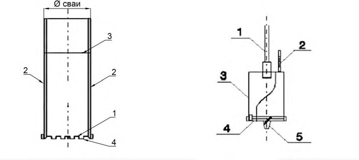

СП 412.1325800.2018 «Конструкции фундаментов высотных зданий и сооружений. Прави»
Приказ Минстроя № 579/пр от 13.09.2018Введён 14.03.2019
Справочная интерактивная копия для удобной работы с документом.
Не является официальным опубликованием. Официальный источник —
Минстрой России.
Перед применением проверяйте актуальность редакции и перечень обязательных требований.
О документе: разработчики, утверждение, регистрация, ключевые слова
СВОД ПРАВИЛ
СП 412.1325800.2018
Правила производства работ
Издание официальное
1 ИСПОЛНИТЕЛЬ - ОАО «НИЦ «Строительство».
- 2 ВНЕСЕН Техническим комитетом по стандартизации ТК 465 «Строительство»
- 3 ПОДГОТОВЛЕН к утверждению Департаментом градостроительной деятельности и архитектуры Министерства строительства и жилищно-коммунального хозяйства Российской Федерации (Минстрой России)
- 4 УТВЕРЖДЕН приказом Министерства строительства и жилищно-коммунального хозяйства Российской Федерации от 13 сентября 2018 г. № 579/пр и введен в действие с 14 марта 2019 г.
- 5 ЗАРЕГИСТРИРОВАН Федеральным агентством по техническому регулированию и метрологии (Росстандарт)
В случае пересмотра (замены) или отмены настоящего свода правил соответствующее уведомление будет опубликовано в установленном порядке. Соответствующая информация, уведомление и тексты размещаются также в информационной системе общего пользования - на официальном сайте разработчика (Минстрой России) в сети Интернет
Настоящий нормативный документ не может быть полностью или частично воспроизведен, тиражирован и распространен в качестве официального издания на территории Российской Федерации без разрешения Минстроя России
Дата введения - 2019-03-14
Введение
6 ВВЕДЕН ВПЕРВЫЕ
Настоящий свод правил разработан в целях реализации основных положений федеральных законов 29 декабря 2004 г. № 190-ФЗ «Градостроительный кодекс Российской Федерации», от 30 декабря 2009 г. № 384-ФЗ «Технический регламент о безопасности зданий и сооружений», от 27 декабря 2002 г. № 184-ФЗ «О техническом регулировании».
Настоящий документ разработан в развитие СП 45.13330.2017 в соответствии с требованиями СП 22.13330.2016, СП 24.13330.2011, СП 267.1325800.2016 и содержит указания по производству работ при устройстве плитных, свайно-плитных и свайных фундаментов из буронабивных свай и баретт при возведении высотных зданий и сооружений.
Свод правил разработан коллективом АО «НИЦ «Строительство» (канд. техн. наук И.В. Колыбин, канд. техн. наук О.А.Шулятьев , д-р техн. наук С.С. Каприелов - руководители темы; д-р техн. наук Б.В Бахолдин, д-р техн. наук В.И. Шейнин ; канд. техн. наук А.М. Дзагов, канд. техн. наук Г.С.Кардумян, канд. техн. наук А.В. Шапошников, канд. техн. наук С.О. Шулятьев , П.И.Ястребов , О.А. Мозгачева ).
Настоящий свод правил устанавливает основные требования к производству работ при устройстве плитных, свайно-плитных и свайных фундаментов из буронабивных свай и баретт при возведении высотных зданий и сооружений.
Настоящий свод правил не распространяется на устройство фундаментов в районах со сложными инженерно-геологическими условиями, районах с вечной мерзлотой, на подрабатываемых территориях, на предприятиях с систематическим воздействием повышенных температур (более 50 °С) и в других аналогичных условиях.
2Нормативные ссылки
В настоящем своде правил использованы нормативные ссылки на следующие документы:
ГОСТ 310.2-76 Цементы. Методы определения тонкости помола
ГОСТ 3282-74 Проволока стальная низкоуглеродистая общего назначе-
ния. Технические условия
ГОСТ 5686-2012 Грунты. Методы полевых испытаний сваями
ГОСТ 5781-82 Сталь горячекатаная для армирования железобетонных конструкций. Технические условия
ГОСТ 7473-2010 Смеси бетонные. Технические условия
КОНСТРУКЦИИ ФУНДАМЕНТОВ ВЫСОТНЫХ ЗДАНИЙ И СООРУЖЕНИЙ Правила производства работ
Design of foundations of high-rise buildings and structures. Work rules
ГОСТ 7566-94 Металлопродукция. Приемка, маркировка, упаковка, транспортирование и хранение
ГОСТ 8478-81 Сетки сварные для железобетонных конструкций. Технические условия
ГОСТ 10181-2014 Смеси бетонные. Методы испытаний
ГОСТ 10922-2012 Арматурные и закладные изделия, их сварные, вяза- ные и механические соединения для железобетонных конструкций. Общие технические условия
ГОСТ 18105-2010 Бетоны. Правила контроля и оценки прочности
ГОСТ 22690-2015 Бетоны. Определение прочности механическими методами неразрушающего контроля
ГОСТ 23616-79 Система обеспечения точности геометрических параметров в строительстве. Контроль точности
ГОСТ 23732-2011 Вода для бетонов и строительных растворов. Технические условия
ГОСТ 23858-79 Соединения сварные стыковые и тавровые арматуры железобетонных конструкций. Ультразвуковые методы контроля качества. Правила приемки
ГОСТ 24211-2008 Добавки для бетонов и строительных растворов. Об- щие технические требования
ГОСТ 24316-80 Бетоны. Метод определения тепловыделения при твердении
ГОСТ 24379.0-2012 Болты фундаментные. Общие технические условия ГОСТ 24379.1-2012 Болты фундаментные. Конструкция и размеры
ГОСТ 24846-2012 Грунты. Методы измерения деформаций оснований зданий и сооружений
ГОСТ 26633-2015 Бетоны тяжелые и мелкозернистые. Технические условия
ГОСТ 28570-90 Бетоны. Методы определения прочности по образцам, отобранным из конструкций
ГОСТ 31384-2017 Защита бетонных и железобетонных конструкций от коррозии. Общие технические требования
ГОСТ 31914-2012 Бетоны высокопрочные тяжелые и мелкозернистые для монолитных конструкций. Правила контроля и оценки качества
ГОСТ 33762-2016 Материалы и системы для защиты и ремонта бетонных конструкций. Требования к инъекционно-уплотняющим составам и уплотнениям трещин, полостей и расщелин
ГОСТ 33697-2015 (ISO 10414-2:2011) Растворы буровые на углеводородной основе. Контроль параметров в промысловых условиях
ГОСТ Р 52544-2006 Прокат арматурный свариваемый периодического профиля классов А500С и В500С для армирования железобетонных конструкций. Технические условия
ГОСТ Р 56178-2014 Модификаторы органо-минеральные типа МБ для бетонов, строительных растворов и сухих смесей. Технические условия
ГОСТ Р 56592-2015 Добавки минеральные для бетонов и строительных растворов. Общие технические условия
ГОСТ Р 57345-2016 Бетон. Общие технические условия
СП 16.13330.2017 «СНиП II-23-81* Стальные конструкции» (с изменением № 1)
СП 22.13330.2016 «СНиП 2.02.01-83* Основания зданий и сооружений»
СП 24.13330.2011 «СНиП 2.02.03-85 Свайные фундаменты» (с изменением № 1)
СП 28.13330.2017 «СНиП 2.03.11-85 Защита строительных конструкций от коррозии» (с изменением № 1)
СП 45.13330.2017 «СНиП 3.02.01-87 Земляные сооружения, основания и фундаменты» (с изменением № 1)
СП 48.13330.2011 «СНиП 12-01-2004 Организация строительства» (с изменением № 1)
СП 63.13330.2012 «СНиП 52-01-2003 Бетонные и железобетонные конструкции. Основные положения» (с изменениями № 1, № 2, № 3)
СП 412.1325800.2018
СП 70.13330.2012 «СНиП 3.03.01-87 Несущие и ограждающие конструкции» (с изменениями № 1, № 3)
СП 126.13330.2017 «СНиП 3.01.03-84 Геодезические работы в строительстве»
СП 130.13330.2011 «СНиП 3.09.01-85 Производство сборных железобетонных конструкций и изделий»
СП 246.1325800.2016 Положение об авторском надзоре за строительством зданий и сооружений
Примечание - При пользовании настоящим сводом правил целесообразно проверить действие ссылочных документов в информационной системе общего пользования - на официальном сайте федерального органа исполнительной власти в сфере стандартизации в сети Интернет или по ежегодному информационному указателю «Национальные стандарты», который опубликован по состоянию на 1 января текущего года, и по выпускам ежемесячного информационного указателя «Национальные стандарты» за текущий год. Если заменен ссылочный документ, на который дана недатированная ссылка, то рекомендуется использовать действующую версию этого документа с учетом всех внесенных в данную версию изменений. Если заменен ссылочный документ, на который дана датированная ссылка, то рекомендуется использовать версию этого документа с указанным выше годом утверждения (принятия). Если после утверждения настоящего свода правил в ссылочный документ, на который дана датированная ссылка, внесено изменение, затрагивающее положение, на которое дана ссылка, то это положение рекомендуется применять без учета данного изменения. Если ссылочный документ отменен без замены, то положение, в котором дана ссылка на него, рекомендуется применять в части, не затрагивающей эту ссылку. Сведения о действии сводов правил целесообразно проверить в Федеральном информационном фонде стандартов.
3Термины и определения
В настоящем своде правил применены термины по СП 45.13330, а также следующие термины с соответствующими определениями:
3.1контроль акустическим методом (соник)
Акустический метод неразрушающего контроля изготовления (сплошности) буронабивных свай, баретт или иных фундаментных конструкций в условиях строительной площадки, а также для определения длины свай.
3.2массивный монолитный фундамент
Фундамент здания, сооружаемый в виде жесткого компактного железобетонного массива сплошного сечения под небольшие в плане тяжелые сооружения (башни, мачты, дымовые трубы, доменные печи, устои мостов и т. п.) с модулем поверхности (Мп) менее 2 м -1 .
3.3сплошной (плитный) монолитный фундамент
Фундамент здания, сооружаемый под всей его площадью, представляющий собой сплошную плиту, выполненную из монолитного железобетона.
3.4буронабивная свая
Свая, устраиваемая методом бурения, в которой проводится бетонирование методом вертикально перемещаемой трубы (ВПТ).
3.5экзотермия бетона
Выделение тепла при твердении бетона вследствие гидратации цемента.
Устройство фундаментов следует проводить в соответствии с проектной и рабочей документацией, проектом организации строительства (ПОС), проектом производства работ (ППР), в том числе технологическими картами (ТК) и технологическими регламентами (ТР), действующими нормативными документами.
По своему содержанию ППР нулевого цикла должен соответствовать требованиям СП 45.13330.2017 (раздел 4), СП 48.13330.2011 (разделы 4, 5) и настоящего свода правил.
При обнаружении несоответствия фактических инженерно-геологических условий проектным следует проводить корректировку проекта оснований и фундаментов, а также ППР.
Подготовку грунтового основания (раздел 6) следует осуществлять в соответствии с ПОС, предусматривающим выполнение дополнительных мероприятий с учетом геологических условий грунтового основания, а также выполнение основания в зимний период строительства.
Устройство оснований и возведение фундаментов следует выполнять в соответствии с положениями СП 45.13330.2017 (разделы 11, 14). При устройстве оснований и возведении фундаментов должны быть обеспечены меры:
по предотвращению ухудшения природных свойств грунтов и качества подготовленного основания вследствие увлажнения грунтов атмосферными осадками, размыва грунтовыми и поверхностными водами, повреждения механизмами и транспортными средствами, промерзания и выветривания (СП 45.13330.2017 (разделы 5-8, 10).
устройству водонепроницаемой конструкции по СП 250.1325800 с учетом требований по защите фундаментов от воздействия агрессивной среды по СП 28.13330.2017 (раздел 5).
В процессе производства работ следует выполнять строительный контроль в соответствии с СП 48.13330.2011 (раздел 7), который делится на входной, операционный и оценку соответствия выполненных работ требованиям проекта и технических регламентов.
Состав контролируемых показателей, предельные отклонения и методы контроля должны соответствовать заданным в проекте и требованиям настоящего свода правил.
Применяемые для устройства фундаментов материалы, изделия и конструкции должны удовлетворять требованиям проектной и рабочей документации, нормативных документов. Замена предусмотренных проектом материалов, изделий и конструкций, а также их расположения в составе возводимого сооружения допускается только по согласованию с проектной организацией.
Проектирование и устройство фундаментов с использованием буронабивных свай должно выполняться на основе и с учетом данных о существующих подземных сооружениях, инженерных коммуникациях со сведени- ями о глубинах их заложения, линиях электропередачи, зданиях и сооружениях, расположенных в зоне влияния выполнения работ. Проекты должны, при необходимости, включать мероприятия по их защите.
Фундаменты, являющиеся элементами высотных зданий высотой 100 м и более, следует выполнять при научно-техническом сопровождении (НТС) со стороны профильных научных организаций в соответствии с СП 22.13330. В состав работ по НТС входят следующие виды работ:
экспертиза проектов производства работ (ППР) и регламентов на выполнение геотехнических видов работ;
отработка технологии выполнения геотехнических работ в соответствии с проектным решением;
выборочный контроль качества выполнения геотехнических работ;
оперативное решение текущих задач, возникающих в процессе выполнения геотехнических работ;
обобщение и анализ результатов всех видов геотехнического мониторинга, их сопоставление с результатами прогноза;
оперативная разработка рекомендаций или корректировка проектных решений на основании данных геотехнического мониторинга при выявлении отклонений от результатов прогноза;
разработка технологического регламента (ТР) производства бетонных и арматурных работ;
Проект производства работ следует разрабатывать на основании ПОС по объекту или ПОР на отдельные виды работ в соответствии с требованиями проекта и строительных правил на строительные работы по объекту.
общие сведения об инженерно-геологических условиях площадки строительства, строящемся сооружении и объектах окружающей застройки;
строительный генеральный план участка строительства;
технологические карты на каждый вид геотехнических работ, включая подготовку основания, устройство плиты, устройство баретт, устройство свай с включением схем операционного контроля качества;
программу работ на опытных участках (если это предусмотрено проектом), согласованную с авторами проекта;
программу контрольных работ (если это предусмотрено проектом);
проект производства геодезических работ на объекте, в том числе с учетом требований раздела 11 по геотехническому мониторингу в части инструментальных наблюдений за осадками и креном строящегося здания по объему и точности измерений;
требования к приемке и контролю качества выполнения работ;
требования к входному, операционному и приемочному контролю;
При применении свайных и комбинированных свайно-плитных фундаментов следует выполнять испытания свай статическими нагрузками в объеме, зависящем от их общего числа и неоднородности основания, но не менее трех испытаний сваями на фундамент каждого высотного здания для свай конкретного типа для каждого типа грунтовых условий.
Испытания грунта сваями могут быть выполнены как при приложении статической нагрузки к верхнему концу сваи согласно ГОСТ 5686, так и методом опускных домкратов согласно СП 267.1325800. Испытания свай статической нагрузкой не могут быть заменены на испытания динамической нагрузкой, включая методы, использующие волновую теорию удара, а также метод по подразделу 8.2 ГОСТ 5686-2012.
При проведении испытаний свай статической нагрузкой диаметром 0,8 м и более следует разрабатывать программу испытаний, согласованную с организацией, проводящей НТС.
Каждую испытуемую сваю следует оснащать системой датчиков, позволяющих фиксировать распределение усилий и перемещений вдоль конструкции сваи. Число испытуемых свай и расстояние между ними выбирается исходя из размеров свайного фундамента (поперечные размеры и длина), нагрузок и грунтовых условий и таким образом, чтобы можно было определить сопротивление по боковой поверхности сваи и нижнему концу, а также выполнить обратный расчет для определения уточнения механических характеристик грунта.
При проведении испытаний свай диаметром более 0,8 м перемещения сваи следует фиксировать с частотой не менее одного раза в 5 мин. Давление в нагрузочной системе рекомендуется поддерживать автоматически с погрешностью, не превышающей 10 % приращения на ступени нагружения.
Устройство траншеи для баретт и, при необходимости, разработка скважин для буронабивных свай должны проводиться под защитой раствора, удерживающего их стенки от обрушения. В качестве таких растворов используют бентонитовые растворы (глинистые суспензии), полимерно-бентонитовые и полимерные растворы.
Состав и свойства бентонитового раствора должны обеспечивать:
устойчивость скважины (траншеи) на период ее устройства и заполнения бетонной смесью (и одновременно не затруднять укладку в выработку материала заполнения);
удержание частиц разрыхленного грунта во взвешенном состоянии;
образование по стенкам выработки кольматированной корки с коэффициентом фильтрации порядка 10 -6 -10 -7 см/с.
Для приготовления глинистых растворов (глинистых суспензий) следует руководствоваться требованиями СП 45.13330. Для устройства фундаментов высотных зданий следует использовать бентонитовые глины. При их отсутствии для приготовления глинистых растворов допускается использовать пластичные местные глины, которые должны удовлетворять требованиям, изложенным в таблице 14.1 СП 45.13330.2017.
5.1.4. Приготовленный глинистый раствор должен удовлетворять требованиям, изложенным в таблице 14.2 СП 45.13330.2017.
Для производства бентонитового раствора следует использовать бентонитовый порошок, воду по перечислениям а), б) в) раздела 3ГОСТ 23732-2011.
Содержание в воде растворимых солей, сульфатов, хлоридов и взвешенных частиц в зависимости от ее назначения не должно превышать значений, указанных в таблице 1 ГОСТ 23732-2011, жесткость воды - не более 12 о Ж.
Для улучшения свойств глинистых растворов допускается применять различные химические реагенты. Наиболее широко применяемым реагентом является кальцинированная сода, служащая для улучшения качества раствора, приготовляемого из глин практически всех видов. Перечень наиболее употребляемых реагентов и их назначение приведены в таблице 14.3 СП 45.13330.2017.
В случае невозможности достижения требуемых показателей качества глинистых растворов, приготовленных из местных глин и обработанных химическими реагентами, допускается в состав растворов добавлять бентонитовую глину.
В сухих устойчивых грунтах (глинистые грунты с показателем текучести I L ≤ 0,25) разработку грунтовых выработок при их глубине до 5 м допускается проводить без применения раствора.
При работе в неустойчивых грунтах с напорными водами для повышения плотности глинистых растворов в их состав следует вводить барит, магнетит и другие утяжелители в количестве до 7 % массы глины.
Приготовление глинистых растворов и их регенерация должны проводиться на технологическом комплексе, включающем емкости для глинистого порошка, химических реагентов, добавок и воды, узел приготовления глинистого раствора, емкости для хранения готового глинистого раствора, узел перекачки глинистого раствора, емкости-отстойники использованного раствора, узел его очистки, а также помещение лаборатории для контроля качества бентонитового раствора.
При производстве работ в зимнее время следует использовать морозоустойчивые глинистые растворы. Для приготовления таких растворов используют воду температурой 10 °С - 40 °С.
Каждая партия бентонитового порошка должна иметь документ о качестве предприятия-изготовителя. Глинистый порошок заводского изготовления следует хранить на складе под навесом в таре предприятия-поставщика в условиях, предотвращающих его замачивание или увлажнение.
Химические реагенты должны храниться в отдельном запираемом помещении в таре предприятия-поставщика. В случае порчи тары они должны быть переложены в другую исправную тару, а просыпавшиеся и непригодные к использованию реагенты должны быть ликвидированы.
Емкости для хранения приготовленного глинистого раствора должны представлять собой закрытые сверху баки или резервуары объемом не менее 10 м³ , оборудованные штуцерами, задвижками и вентилями для подачи и перекачки глинистого раствора и указателями его уровня в емкости.
Основные параметры бентонитового раствора должны быть определены строительной организацией до начала производства работ в зависимости от применяемого исходного материала (бентонитового порошка). По результатам указанных определений значение плотности глинистого раствора принимается представителем проектной организации и фиксируется в журнале авторского надзора.
Для приготовления полимерных растворов используют водорастворимые высокомолекулярные полимеры: полиакрилонитрил, полиакриламид, карбоксиметилцеллюлозу, сополимер и др.
Оптимальные рецептуры полимерных растворов, которые в значительной степени зависят от конкретных геолого-гидрохимических условий участка строительства, подбираются опытным путем.
Для утилизации полимерного раствора на основе полиакриламида следует провести разложение раствора путем добавления бытового отбеливателя или перекиси водорода. Утилизация раствора возможна путем добавления специального реагента.
Активное перемешивание полимерного раствора может привести к коагуляции, поэтому при зачистке забоя необходимо особенно тщательно контролировать качество полимерного раствора.
Для обеспечения устойчивости стенок выработок должно соблюдаться условие
Формула из оригинального документа не распознана при конвертации. Сверьтесь с официальным изданием.
где р р - давление бентонитового (полимерного) раствора; р г - горизонтальное давление скелета грунта (с учетом нагрузки на поверхности грунта); р в - поровое давление.
Арматурная сталь и сортовой прокат, арматурные изделия и закладные элементы должны соответствовать проектной документации, требованиям ГОСТ 5781, ГОСТ 8478, ГОСТ 10922, ГОСТ Р 52544, СП 63.13330.2012 (раздел 6).
Заготовку стержней, изготовление арматурных изделий, резку стержневой, бунтовой, проволочной арматуры и сеток следует проводить механическими, гидравлическими или пневматическими ножницами, пилами трения, а также плазменными горелками в соответствии с требованиями СП 130.13330.
Для вязки сеток и пространственных каркасов из стержней большого диаметра -от 25 до 40 мм -следует применять низкоуглеродистую вязальную проволоку общего назначения, нормальной точности, термически обработанную, светлую 2,5-О-С ГОСТ 3282-74.
Требования к определению длины нахлестки l l стыкуемых стержней в зависимости от расчетных сопротивлений арматуры и бетона, напряженного состояния бетона в зоне стыка и диаметра арматуры приведены в [3, пункт 8.3.27]. При этом значения перепуска арматуры указывают в проекте.
При стыковке внахлестку стыкуемые стержни располагают вплотную один к другому и скрепляют скрутками.
Расстояние между стыкуемыми стержнями не должно превышать четырех диаметров стыкуемых стержней (4 d ). Шаг между скрутками не должен превышать 300 мм. Соседние стыки внахлестку следует располагать вразбежку, чтобы расстояния между центрами тяжести стыков были не менее 1,5 l l (см. рисунок 5.1).

Примечание d , d 1, d 2 - см. 5.2.10; l l - см. 5.2.8.
Рисунок 5.1 - Схема расположения стыков в сетках из одиночных стержней
Расстояние в свету между соседними стыками внахлестку (по ширине железобетонного элемента) должно быть не менее 2 d (где d - максимальный диаметр из диаметров d 1 и d 2 двух стыкуемых стержней) не менее 30 мм (см. рисунок 5.1) и не менее 1,5 d з (где d з - максимальный размер крупного заполнителя).
Расстояние в свету по вертикали между стержнями горизонтальных сеток, в которых стыки осуществляются в нахлестку в своих горизонтальных плоскостях, должно быть не менее приведенного диаметра d * двух стыкуемых стержней и не менее 50 мм (при двух сетках не менее 300 мм) и не менее 1,5 d з . Приведенный диаметр определяют по формуле
Формула из оригинального документа не распознана при конвертации. Сверьтесь с официальным изданием.
Нахлесточные стыки стержней отдельных сеток у швов бетонирования и вертикальных сечений пакета сеток фундаментной плиты следует располагать согласно схемам, показанным на рисунке 5.2 (для сеток из одиночных стержней). Расположение стыков стержней сеток по высоте должно комбинироваться из схем (см. рисунок 5.2), таким образом, чтобы в одном сечении была выполнена стыковка не более 50 % всех стержней. Стыки арматуры расположены в одном сечении, если расстояние между центрами стыков меньше или равно 1,3 l l . а
Рисунок 5.2 - Схема расположения нахлесточных стыков в сетках из одиночных стержней у швов бетонирования
В сварных сетках и каркасах при наличии на длине нахлестки приваренных поперечных стержней длина нахлестки может быть изменена. Во всех случаях длину нахлеста следует принимать не менее 20 d , но не менее 250 мм.
Арматурные каркасы для изготовления буронабивных свай и баретт должны обеспечивать их подъем и установку в проектное положение. Для этого применяют дополнительные усиливающие элементы, такие как кольца жесткости, накладки, диагональные элементы жесткости.
Стыки арматурных стержней должны обеспечивать полную передачу нагрузок в стыке каждого отдельного стержня. Для этого могут применяться сварка, вязальная проволока или соединительные муфты.
Соединение поперечной арматуры с продольными стержнями должно выполняться с помощью вязальной проволоки, скоб или сварки.
Зазор между стержнями каркаса и внутренней поверхностью обсадной трубы или стенки скважины должен обеспечить возможность погружения каркаса и предотвратить повреждение стенки скважины. Для этого следует применить по три фиксатора в каждом сечении, расстояние между сечениями не должно превышать 30 см. При диаметре скважины больше 1,2 м число фиксаторов в каждом сечении должно быть увеличено.
Для устройства монолитных конструкций следует применять бетонные смеси, отвечающие требованиям ГОСТ 7473, подраздела 5.2 СП 70.13330.2012, пункта 9.4.6 СП 250.1325800.2016.
Бетонные смеси для укладки в конструкции фундаментных плит и буронабивных свай или баретт, выполняемых способом «стена в грунте» по методу ВПТ, должны иметь марку по удобоукладываемости не ниже П4 и иметь значение водоотделения не более 0,4 % согласно ГОСТ 7473.
Вяжущие, заполнители и добавки для приготовления бетонов должны соответствовать требованиям подраздела 5.1 СП 70.13330.2012 и пунктов 9.4.1-9.4.3 СП 250.1325800.2016.
При использовании активных минеральных добавок расширяющего действия, не повышающих экзотермию бетона, модификаторов класса Б по ГОСТ Р 56178, следует применять портландцементы с содержанием С3А не более 8 % без минеральных добавок или портландцементы, содержащие минеральные добавки исключительно в виде доменного шлака в количестве до 20 %.
Примечание - Для определения видов добавок, не повышающих экзотермию бетонов в процессе твердения, рекомендуется выполнить измерения тепловыделения комплексного вяжущего в подобранном составе бетона согласно ГОСТ 310.5 и ГОСТ 24316.
В соответствии с ГОСТ 7473 для производства высокоподвижных или самоуплотняющихся бетонных смесей повышенной связности-нерасслаиваемости по 5.3.2 следует использовать минеральные добавки по ГОСТ Р 56592 в сочетании с органическими пластифицирующими добавками по ГОСТ 24211 или органо-минеральные поликомпонентные модификаторы, соответствующие ГОСТ Р 56178.
В бетонных смесях, предназначенных для укладки методом ВПТ, суммарное содержание портландцемента, минеральных добавок или органо-минеральных модификаторов должно быть не менее 450 кг/м³ .
Составы бетонных смесей по заданным характеристикам бетона согласно требованиям ГОСТ 26633 подбирают для каждого предприятия-производителя с учетом надежности его технологии и соответствующей культуры производства, конкретной гранулометрии заполнителей и используемых добавок, а также с учетом условий доставки смесей к месту укладки.
Бетон для фундаментных конструкций должен соответствовать классу по прочности на сжатие, маркам по морозостойкости и водонепроницаемости, указанным в проектной документации, и удовлетворять требованиям ГОСТ 26633, пункта 9.4.8 СП 250.1325800.2016, СП 28.13330.
Бетон для массивных фундаментных плит должен обладать минимальной экзотермией и замедленной в раннем возрасте кинетикой твердения в нормальных температурно-влажностных условиях.
6Подготовка грунта основания плитного и плитно-свайного фундаментов
При устройстве плитных и плитно-свайных фундаментов должны выполняться мероприятия, обеспечивающие сохранение физико-механических характеристик грунта основания в соответствии с требованиями раздела 11СП 45.13330.2017. Не допускаются промораживание, расструктуривание, замачивание оснований фундаментных плит и ростверков.
Перед производством работ по устройству фундаментной плиты или ростверка необходимо выполнить освидетельствование грунта основания на соответствие его проектному путем визуального осмотра. В дополнении к этому следует выполнить отбор грунта, залегающего на дне котлована, для определения его физико-механических свойств и их соответствия результатам инженерно-геологических изысканий.
В случае несоответствия физико-механических свойств отобранных образцов грунта данным инженерно-геологических изысканий работы по устройству фундаментов должны быть приостановлены до принятия соответствующих решений авторского надзора.
Для сохранения грунта основания при устройстве плитно-свайного фундамента следует оставлять защитный слой грунта, не допускающий его разрушения при работе строительной техники при устройстве свай, либо выполнять работы с силовой бетонной подготовки.
Толщину защитного слоя грунта следует принимать не менее 1 м.
Толщина силовой бетонной подготовки зависит от вида грунта и типа работающей техники. Она должна определяться расчетом, но принимают не менее 150 мм.
В случае применения силовой бетонной подготовки для устройства забивных свай их следует погружать в предварительно пробуренные скважины диаметром, равным стороне сечения сваи. Глубина скважин определяется из расчета недопущения разрушения силовой бетонной подготовки из-за перемещения грунта вверх в результате его вытеснения при устройстве забивных свай, с одной стороны, и требуемого усиления грунта основания - с другой.
Для повышения несущей способности грунта основания возможно его усиление (закрепление, уплотнение, армирование и т.п.) в соответствии с требованиями разделов 16-18 СП 45.13330.2017.
7Производство работ по устройству буронабивных сваи
Выполнение работ по устройству скважин следует начинать после инструментальной проверки отметок спланированной территории и положения осей буронабивных свай на площадке строительства.
Устройство буронабивных свай следует выполнять с применением универсальных агрегатов грейферного, ударного, роторного, ковшового или шнекового типа, позволяющих помимо бурения скважины проводить установку армокаркасов и бетонирование, а также извлечение обсадных труб в соответствии с требованиями СП 45.13330 и настоящего свода правил.
При отсутствии подземных вод в пределах глубины заложения свай их устройство может осуществляться в сухих скважинах без крепления их стенок, а в водонасыщенных грунтах - с их креплением извлекаемыми обсадными трубами (рисунок А.1, а ), бентонитовыми (полимерными) растворами, а в некоторых случаях по проекту - под избыточным давлением воды.
Погружение обсадных труб следует выполнять с помощью вибратора или оборудования, обеспечивающего возвратно-поступательные движения.
Обсадные трубы должны быть снабжены режущим наконечником. Режущий наконечник монтируется на нижнем фланце первой обсадной трубы.
Для проходки песков, крупнообломочных грунтов и пластичных глинистых грунтов следует применять обычный режущий наконечник, для проходки твердых глинистых и скальных грунтов - усиленный.
Если режущее кольцо выступает наружу, то выступ должен быть как можно меньшим, однако достаточным для свободного погружения и поднятия обсадных труб.
Перед началом устройства скважины внутренние поверхности секций обсадных труб следует очистить от налипшего грунта и цементного молочка, попавшего на их стенки при бетонировании предыдущей скважины.
Разработку грунта внутри обсадной трубы следует выполнять с оставлением грунтовой пробки для дисперсных грунтов высотой не менее двух диаметров обсадной трубы, но не менее 1 м, и уточнять по результатам устройства опытных свай. В случае наличия подземных вод следует внутри обсадной трубы искусственно поддерживать уровень воды на 1,5 м выше существующего уровня подземных вод. Данный уровень воды может быть уменьшен при достаточном значении грунтовой пробки или высоком столбе свежеуложенного бетона.
При разработке маловлажных связных грунтов возможно налипание грунта на режущий наконечник обсадной трубы, что может привести к подъёму каркаса при извлечении обсадной трубы и попаданию грунта в бетонную смесь при бетонировании. Для предупреждения этого после достижения проектной отметки обсадную трубу следует приподнять на 0,3-0,5 м и несколько раз опустить буровой инструмент (в случае грейфера - с открытыми челюстями) до забоя скважины.
Бентонитовые растворы, применяемые для крепления стенок разбуриваемых скважин, должны удовлетворять требованиям, изложенным в разделе 5.
Уровень бентонитового раствора в скважине в процессе ее бурения, очистки и бетонирования не должен выходить за пределы форшахты. При бурении скорость подъема бурового инструмента следует ограничивать во избежание возникновения поршневого эффекта, сопровождающегося суффозией околоскважинного грунта.
При устройстве буронабивных свай буровой грейфер (рисунок
А.1, г ) следует применять для разработки песчаных и крупнообломочных, а также твердых глин и полускальных грунтов.
При разработке песчаных и крупнообломочных грунтов следует применять буровой грейфер, имеющий герметичные челюсти повышенной вместимости.
Для разработки твердых глин челюсти должны быть выполнены с режущими зубьями.
При разработке буровым грейфером твердых грунтов челюсти специальным приспособлением допускается закреплять (блокировать) в открытом положении, чтобы обеспечить работу бурового грейфера как ударного долота.
Разработка скальных грунтов следует выполнять буровыми долотами (рисунок А.1, д ), которые в зависимости от модели долота снабжаются острием, зубьями или прямыми резцами. Модель долота, обеспечивающая наибольшую производительность разработки данного грунта, выбирается опытным путем.
При проходке скальных грунтов необходимо разрабатывать грунт в скважине, приподнимая и вновь опуская обсадную трубу поступательно-вращательными движениями. Игнорирование этого требования может привести к заклиниванию обсадной трубы при ее извлечении из скважины.
Ковшевый бур (ковшебур) (рисунок А.1, б ) предназначен для проходки водонасыщенных песков или гравелистых грунтов, а также на завершающем этапе для зачистки скважины. В последнем случае он имеет плоские режущие кромки.
При устройстве буронабивных свай забой скважины должен быть тщательно очищен от разрыхленного грунта или, при отсутствии воды в скважине, уплотнен трамбованием.
Уплотнение неводонасыщенных грунтов следует проводить путем сбрасывания в скважину трамбовки (при диаметре 1 м и более - массой не менее 5 т, при диаметре скважины менее 1 м - 3 т). Уплотнение грунта забоя скважины также может быть выполнено методом виброштампования, в том числе с добавлением жестких материалов (щебень, жесткая бетонная смесь и т. п.). Трамбование грунта в забое скважины необходимо проводить до значения отказа, не превышающего 2 см за последние пять ударов.
Зачистку забоя от бурового шлама следует выполнять грейфером или ковшебуром, а в водонасыщенных песчаных грунтах - желонкой, снабженной обратным клапаном. При этом особое внимание следует обращать на недопущение выноса окружающего грунта в скважину.
В случае бурения под водой или бентонитовым (полимерным) раствором допускается применять удаление разрыхленного грунта в забое скважины путем его взмучивания и последующего удаления откачкой.
Перед бетонированием и после установки арматурного каркаса должно быть проведено повторное освидетельствование скважины на отсутствие рыхлого грунта, осыпей, вывалов, воды и шлама в забое скважины.
Непосредственно перед подводной укладкой бетонной смеси в каждой скважине, пробуренной в скальном грунте, необходимо с поверхности забоя смыть буровой шлам. Для промывки следует обеспечить подачу воды под избыточным давлением от 0,8 до 1 МПа при расходе от 150 до 300 м³ /ч. Промывку следует продолжать в промежутке от 5 до 15 мин до исчезновения остатков шлама (о чем должен свидетельствовать цвет воды, переливающейся через край обсадной трубы или патрубка). Промывку необходимо прекращать только в момент начала движения бетонной смеси в бетонолитной трубе.
По окончании бурения следует проверить соответствие проекту фактических размеров скважин, отметки их устья, забоя и расположения каждой скважины в плане, а также установить соответствие типа грунта основания данным инженерно-геологических изысканий (при необходимости - с привлечением геолога).
Последовательность изготовления свай следует выбирать таким образом, чтобы исключить повреждение соседних свай. Бурение скважин, расположенных на расстояниях менее четырех их диаметров от центров ранее изготовленных смежных свай, прочность бетона которых не достигла 50 % проектного класса с учетом фактического коэффициента вариации по ГОСТ 18105, не допускается. При расстояниях более четырех диаметров бурение скважин проводится без ограничений.
Каждый арматурный каркас перед установкой в скважину для устройства буронабивной сваи должен быть проверен на соответствие проекту. На основании этой проверки должен быть составлен акт на его приемку.
Перед установкой каркаса следует очистить забой скважины от шлама и при применении бентонитового раствора заменить его на свежеприготовленный. Для очистки дна траншеи от шлама применяют погружные насосы, эрлифтовые установки. При применении полимерного раствора зачистку забоя следует производить с аккуратностью, не допуская коагуляции раствора.
Строповка каркаса при погружении в скважину должна обеспечивать его вертикальное положение. Запрещается опускать каркас в наклонном положении. Каркас фиксируется в скважине с помощью ограничителей.
Производство бетонных работ следует осуществлять согласно ППР и в особых случаях при сложных гидрогеологических условиях или больших размерах свай - согласно ТР, разрабатываемому исполнителем и согласованному с автором проекта.
До начала бетонирования необходимо проверить чистоту зачистки скважины. Если в скважине имеется раствор для удержания стенок скважины, то перед бетонированием следует проверить его свойства согласно 5.1.
Скважину заполняют бетоном, чтобы образовался сплошной монолитный ствол без дефектов с равным сечением по всей длине. Перерыв между окончанием бурения и началом бетонирования должен быть минимальным.
Бетон с помощью бетонолитной трубы должен подаваться вертикально в центр скважины, так чтобы он не попадал на арматуру и стенку скважины и свободно падал в скважину без загрязнений и расслоения.
Бетонолитная труба должна свободно перемещаться внутри арматурного каркаса. Максимальный диаметр бетонолитной трубы, включая ее соединения, не должен составлять более 0,6 внутреннего диаметра арматурного каркаса.
Ее внутренний диаметр должен превышать не менее чем в шесть раз размер включений заполнителя и быть не менее 150 мм.
Если бетон укладывают под водой или ниже уровня раствора для удержания стенок скважины, его консистенцию выбирают согласно требованиям 5.3.2, а его состав согласно ГОСТ Р 57345 и применяют вертикально перемещающуюся трубу для подводного бетонирования.
Бетонолитная труба должна быть постоянно заполнена бетонной смесью.
Перерывы в бетонировании более 60 мин не допускаются.
Технологический перерыв, связанный с переустановкой бетонолитной трубы, не должен превышать 30 мин.
При бетонировании методом ВПТ следует применять приемный бункер с бетонолитной трубой диаметром 250-325 мм (объем бункера должен быть не меньше внутреннего объема бетонолитной трубы). Стыки секций бетонолитной трубы должны быть герметичными, а соединения отдельных частей трубы - быстроразъемными. Бетонолитная труба должна быть оборудована обратным клапаном. В бетонолитной трубе должна быть установлен разделитель сред для исключения перемешивания бетона с раствором или водой.
Для укладки первой порции бетонной смеси бетонолитную трубу следует приподнимать не выше, чем на значение ее внутреннего диаметра, затем быстро заполнять все сечение скважины бетоном. Объем первой порции бетонной смеси должен быть достаточным для обеспечения одномоментного подъема бетона внутри обсадной трубы на высоту не менее чем 2 м от забоя.
В дальнейшем бетонолитную трубу следует поднимать таким образом, чтобы ее нижний конец оставался погружен в бетоне не менее чем на 1,5 м при диаметре сваи D < 1,0 м, с учетом подъема и демонтажа секций. Для буронабивных свай с диаметром D ≥ 1,5 м глубина погружения трубы должна быть не менее 2,5 м, для промежуточных значений - по интерполяции.
Подачу бетонной смеси и скорость подъема обсадных труб следует устанавливать так, чтобы в свежеуложенный бетон не проникали грунт или вода даже в случае резкого оседания бетона.
Бетонирование следует проводить до уровня, превышающего на 2 % проектную отметку высоты конструкции, но не менее чем на 40 см, с последующим удалением верхнего слоя бетона (после затвердевания бетонной смеси), загрязненного шламом грунта и бентонитового раствора.
В случае невозможности повторного устройства сваи необходимо выполнить холодный шов или бетонолитную трубу оснастить затвором, после чего устройство сваи может быть продолжено. В случае если это невозможно выполнить, свая не должна быть использована, а полость скважины должна быть заполнена мелкозернистым бетоном.
Если бетонолитная труба повторно была погружена в бетон или был выполнен холодный шов, то сплошность сваи должна быть подтверждена испытанием методом ультразвуковой дефектоскопии и путем выбуривания керна.
Опрессовку раствором пяты допускается проводить с помощью стальных труб, закрепленных на арматурных каркасах, с помощью гибких оболочек (рисунок Б.1, а ), установленных вместе с арматурным каркасом и обеспечивающих растекание нагнетаемого раствора по всей площади подошвы основания буровой сваи, или труб с манжетами, расположенных в забое скважины (рисунок Б.1, б ).
Опрессовку по боковой поверхности сваи следует проводить с помощью труб для опрессовки, которые крепятся на арматурном каркасе, на жесткой арматуре или на сборном бетонном элементе (рисунок Б.2).
Опрессовку по боковой поверхности сваи следует выполнять поинтервально по манжетной технологии снизу вверх. Необходимое количество твердеющего раствора для выполнения опрессовки следует определять согласно приложению Л.
Работы по устройству баретт для фундамента высотного здания следует осуществлять в соответствии с общими принципами, изложенными в разделе 14 СП 45.13330.2017.
Выбор оборудования для устройства баретт под фундаменты высотных зданий следует проводить в зависимости от глубины разработки траншеи, инженерно-геологических и гидрогеологических условий участка строительства.
Устройство баретт может быть ограничено наличием грунтов с карстовыми полостями, рыхлых насыпных грунтов, водонасыщенных илов, включением валунов и обломков строительных конструкций, подземных коммуникаций и других препятствий.
Работы по устройству траншей для баретт начинаются с разбивки осей в плане, которая проводится геодезической службой и оформляется соответствующим актом. Акт передается подрядчику и является составной частью исполнительной технической документации на работы по устройству фундаментов высотного здания.
При устройстве баретт в непосредственной близости от существующей застройки необходимо вести постоянный мониторинг состояния зданий, окружающего массива грунта и водонесущих коммуникаций, расположенных в зоне влияния строительства, в соответствии с требованиями раздела 11.
До начала работ по устройству баретт в непосредственной близости от существующей застройки должны быть выполнены работы по устройству защитных мероприятий для зданий и сооружений, если такие работы необходимы.
При устройстве баретт следует вести постоянный контроль качества выполняемых работ. Перечень технологических операций, подлежащих обязательному контролю, приведен в разделе 10.
До массового изготовления баретт все технологические операции необходимо отработать на опытном участке, оборудованном необходимыми датчиками и скважинами для проведения мониторинга.
Для проведения работ на опытном участке разрабатывается проект опытного участка, в котором указываются порядок операций, контролируемые параметры бентонитового (полимерного) раствора, бетонной смеси, бетона, а также приведены схемы расположения точек мониторинга.
Верхняя часть траншеи для устройства баретты должна быть закреплена форшахтой, предотвращающей обрушение верха бортов траншеи и служащей направляющей для землеройного механизма. Форшахта также служит для подвешивания на ней арматурных каркасов.
Высота форшахты должна быть не меньше 0,8-1 м. В случае наличия в зоне устройства баретт насыпного грунта со строительным мусором необходимо его выбрать и заместить песком с уплотнением до К упл не ниже 0,92 либо выполнить форшахту глубиной, превышающей толщину слоя насыпного грунта.
Внутреннее расстояние между стенками форшахты в свету при применении грейферных и бурофрезерных механизмов должно быть на 5-10 см больше проектной ширины траншеи.
Высотное положение форшахты для устройства баретты должно быть таким, чтобы уровень бентонитового (полимерного) раствора в ней был выше уровня подземной воды на 1-1,5 м. При высоком уровне подземных вод для устройства форшахты должна быть отсыпана насыпь.
При разработке грунта бентонитовый (полимерный) раствор в выработке должен поддерживаться на уровне не ниже 50 см от верха форшахты. Разработка грунта не допускается, если уровень бентонитового (полимерного) раствора находится ниже низа форшахты.
После бетонирования форшахты и набора бетоном прочности на сжатие не менее 75 % проектного (не менее 15 МПа) приступают к работам по разработке траншеи.
Разработку траншеи для устройства баретт следует осуществлять по захваткам с помощью грейфера или фрезы. Последовательность устройства баретт должна соответствовать проекту. Не допускается последовательное выполнение рядом расположенных баретт при расстоянии между ними менее 5 м.
Процесс разработки траншеи должен сопровождаться постоянным добавлением бентонитового (полимерного) раствора в объеме, равном объему извлекаемого грунта.
В процессе устройства траншеи под баретту должна осуществляться постоянная регенерация бентонитового (полимерного) раствора, обеспечивающая поддержание параметров, указанных в 5.1.
В процессе разработки траншеи следует на растворном узле хранить дополнительное (аварийное) количество бентонитового (полимерного) раствора в объеме одной захватки.
При резком уходе раствора из траншеи следует подавать в нее аварийный запас бентонитового (полимерного) раствора. Если после заливки двойного объема захватки уход раствора продолжается, траншею захватки следует немедленно засыпать среднезернистым песком, запас которого, равный двойному объему захватки, должен постоянно присутствовать на строительной площадке. После этого необходимо принять решение совместно с представителем проектной организации.
По завершении разработки траншеи необходимо тщательно очистить ее дно от шлама и осуществить проверку соответствия проекту фактической глубины траншеи с допуском до ±100 мм.
Результаты разработки траншеи и устройства баретты должны быть отражены в журнале изготовления баретты (приложение Д), а приемка готовой траншеи оформляется актом. Указанные документы оформляются подрядчиком.
Работа по устройству баретт должна быть организована таким образом, чтобы при отключении электроэнергии или при других непредвиденных обстоятельствах была обеспечена непрерывность подачи бентонитового раствора в траншею.
Сброс отработанного глинистого раствора в водоемы, канализацию и водопропускные сооружения категорически запрещен. Отработанный глинистый раствор должен вывозиться в отвалы.
Бетонирование баретты следует проводить сразу после разработки траншеи. В случае перерыва между этапами работ более 6 ч перед бетонированием баретты заполняющий траншею бентонитовый раствор должен быть замещен на свежий, а дно выработки повторно очищено от выпавшего шлама. Очистку дна выработки от шлама следует проводить с помощью грейфера, погружных насосов или эрлифтных установок.
В случае применения заполняющего траншею бентонитового раствора удаление шлама со дна траншеи следует выполнять с помощью эрлифтных установок, т. е. путем перемешивания шлама, скопившегося на дне скважины, с помощью подачи воздуха под давлением и его последующего удаления при откачивании вместе с бентонитовым раствором из скважины.
В случае применения полимерного раствора шлам следует удалять путем простой механической очистки скважины грейфером специальной конструкции с плоскими ножами.
Перед установкой каркаса в траншею следует очистить ее дно от шлама. В случае применения бентонитового раствора следует заменить его на свежеприготовленный.
Каркас погружается в скважину с помощью крана, при большой его длине каркас погружают по звеньям: первое звено вывешивается над траншеей (на форшахте) и к нему приваривается второе звено и т.д.
Бетонирование конструкции разрешают только после освидетельствования и оформления актов на освидетельствование скрытых работ по разработке грунта и армированию траншеи баретты.
Сдачу-приемку каждой выполненной захватки конструкции следует оформлять актом.
9Производство работ по устройству фундаментных плит
9.1Общие положения
Устройство фундаментных плит проводится после приемки по соответствующим актам грунтового и свайного оснований и бетонной подготовки под плиту и включает следующие виды работ:
подготовительные работы;
арматурные работы;
бетонные работы.
9.2Подготовительные работы
Подготовительные работы должны включать:
устройство и приемку подготовки основания в соответствии с требованиями проекта, СП 45.13330, СП 246.1325800 и настоящего свода правил;
устройство и приемку бетонной подготовки в соответствии с требованиями проекта, СП 45.13330, СП 246.1325800 и настоящего свода правил;
устройство и приемку гидроизоляции и иных работ (защитная стяжка и т. п.) по защите от коррозии плитных фундаментов в соответствии с требованиями проекта, СП 45.13330, СП 267.1325800, СП 28.13330 и настоящего свода правил;
установку опалубки в соответствии с требованиями подраздела 5.17 СП 70.13330.2012;
устройство деформационных и технологических швов с разбивкой конструкции плиты на блоки (захватки) бетонирования в соответствии с проектом, ТР и ППР;
установку (подготовку) оснастки и приборов системы контроля температуры для регулирования заданного в ТР и ППР температурного режима;
устройство, при необходимости, согласно ТР дополнительного косвенного армирования;
устройство в соответствии с условиями ТР и ППР навеса или шатра для создания теплового контура при проведении работ в зимний период;
подготовку влаготеплозащитных материалов для ухода за конструкцией и управления температурно-влажностным режимом твердения согласно ТР и ППР;
подготовку механизмов и автотранспорта для перевозки и укладки бетонной смеси в конструкцию.
Армирование монолитных фундаментных плит следует выполнять в соответствии с конструкторской документацией и разработанным для каждого конкретного случая ППР.
Смещение арматурных стержней при их установке, а также в арматурных каркасах и сетках не должно превышать 0,25 диаметра устанавливаемого стержня, но не более 0,2 наибольшего диаметра стержня.
При необходимости установки анкерных болтов следует использовать шаблоны, исключающие возможность их отклонения от проектного положения сверх допустимых значений. Положение анкерных болтов должно соответствовать проекту, значение отклонения от проектного положения - требованиям таблицы 5.12 СП 70.13330.2012.
Подготовку основания к бетонированию следует осуществлять в соответствии с подразделом 5.3 СП 70.13330.2012.
Перед бетонированием фундамента бетонную подготовку (или прижимную плиту), опалубку и арматуру следует очистить от мусора, грязи, битума, масел, промыть (при положительной температуре), а оставшуюся на поверхности воду удалить сжатым воздухом. В зимнее время следует удалить снег и наледь горячим воздухом под брезентом или полиэтиленовым укрытием. Удалять снег и наледь паром или водой не допускается. Арматура должна быть очищена от ржавчины. В зимний период основание и арматурный каркас фундамента должны быть прогреты до положительной температуры.
Бетонирование следует выполнять только после освидетельствования и оценки соответствия по акту: бетонной подготовки, гидроизоляции, стяжки, устройства гидрошпонок (при необходимости), прижимной плиты, арматуры плиты и опалубки.
Бетонирование монолитной фундаментной плиты с укладкой бетонной смеси в опалубку следует проводить в соответствии с требованиями пунктов 5.13.1-5.13.6 СП 70.13330.2012 и 5.3 настоящего свода правил.
Состав, приготовление, правила приемки и методика контроля качества бетонной смеси должны соответствовать разделам 5-7 ГОСТ 74732010.
Бетонная смесь не должна обладать признаками расслоения и водоотделения, которые в условиях строительной площадки определяются визуально в лаборатории по пробе смеси, отобранной для измерения подвижности. В случае явных признаков расслоения смесь не допускается принимать для укладки в конструкцию.
Измерение температуры бетонной смеси осуществляется контактным методом.
Бетонирование плиты в пределах отдельных блоков (захваток), по границам которых устраивают рабочие швы, следует проводить без перерывов в бетонировании.
Во избежание образования не предусмотренных проектом рабочих (холодных) горизонтальных и вертикальных швов в плите необходимо выбрать способ и темп бетонирования, чтобы каждый блок (захватка) был полностью забетонирован в требуемое время без недопустимых перерывов в бетонировании.
Допустимый интервал во времени при бетонировании соседних блоков (захваток) устанавливается в ТР и ППР.
При укладке бетонной смеси с перерывами поверхность вертикальных рабочих швов должна быть перпендикулярна поверхности бетониру- емых участков фундаментной плиты. Возобновление бетонирования допускается проводить по достижении бетоном прочности не менее 1,5 МПа (пункт 5.3.12 СП 70.13330.2012).
Укладку и уплотнение бетонной смеси следует осуществлять в соответствии с условиями ТР и ППР. Уплотнение бетонной смеси должно обеспечивать требуемую плотность и однородность бетона. Толщина уплотняемого слоя должна быть не более длины уплотняющего устройства.
Продолжительность вибрирования бетонной смеси следует принимать в зависимости от удобоукладываемости бетонной смеси, типа бетонируемой конструкции, степени и вида армирования, параметров уплотняющего оборудования при разработке ППР или ТР бетонирования.
Толщина укладываемых слоев бетонной смеси должна определяться с учетом ее консистенции и технологии бетонирования и отвечать требованиям таблиц 5.2, 5.3 СП 70.13330.2012.
Уплотнение бетонной смеси необходимо проводить с соблюдением следующих правил:
шаг перестановки глубинных вибраторов не должен превышать полуторного радиуса их действия для смесей с подвижностью П5; при использовании самоуплотняющихся бетонных смесей время вибрации в одной точке (позиции) должно быть не более 3 с, а точки воздействия на смесь следует располагать на расстоянии 0,6-1,0 м;
глубина погружения глубинного вибратора в бетонную смесь должна обеспечить углубление его в ранее уложенный слой от 5 до 10 см;
опирание вибраторов во время их работы на арматуру и закладные части бетонируемых конструкций, а также на тяги и другие элементы ее крепления не допускается.
Контроль уплотнения бетонной смеси следует осуществлять визуально по оседанию смеси, прекращению удаления воздуха с учетом предотвращения выделения цементного молочка.
Для передвижения людей в процессе бетонирования, отделки поверхности и дальнейшего ухода за плитой следует использовать пешеходные настилы, устраиваемые в соответствии с ППР.
После окончания бетонирования организовывают уход за конструкцией фундаментной плиты в целях обеспечения набора прочности и предупреждения появления температурно-усадочных трещин в соответствии с требованиями подраздела 5.4 СП 70.13330.2012.
Организация ухода должна быть разработана с учетом конструктивных особенностей фундаментной плиты, экзотермии бетона и температуры окружающей среды, а такие мероприятия по уходу, как скорость охлаждения конструкции, способы управления температурой и др., должны быть установлены ТР и ППР. Указанные мероприятия должны обеспечивать получение требуемых показателей качества бетона в проектном возрасте.
Мероприятия по уходу за свежеуложенным бетоном до установленной прочности должны обеспечивать защиту от размывания бетона и благоприятные температурно-влажностные условия для формирования структуры и свойств твердеющего бетона. Вид и продолжительность ухода с учетом состава бетонной смеси, погодных условий и технологии бетонирования следует определять в ТР и учитывать при разработке ППР.
9.5.5 Основные принципы ухода за конструкцией после бетонирования
В начальный период на стадии повышения температуры бетона для предотвращения влажностной усадки бетона не позднее чем через 0,5-2 ч после бетонирования и заглаживания поверхности бетона устраивается защитное покрытие, предотвращающее обезвоживание поверхности, с применением нижеперечисленных способов:
обработка поверхности пленкообразующим составом;
орошение поверхности водой с последующим укрытием рулонным влагозащитным материалом, например полиэтиленовой пленкой;
покрытие поверхности водонасыщенным материалом, например мешковиной;
устройство «водяной ванны».
Выбор одного или комплекса вышеизложенных способов, в зависимости от условий производства работ, должен быть указан в ТР или ППР.
В последующий период на стадии остывания захватки (блока) (время с момента стабилизации температуры на уровне t max до достижения значения t окр.среды) температура твердения бетона в конструкции регулируется в целях обеспечения скорости остывания, определенной теплотехническим расчетом, проведенным при разработке ТР. Дополнительное укрытие на верхней поверхности устраивается, только когда разность температур на поверхности и в ядре плиты превышает значения, определенные ТР.
Управление режимом охлаждения конструкций с учетом заданной расчетом скорости снижения температуры должно осуществляться одним или комплексом приведенных ниже методов:
утепление поверхности конструкций теплоизоляционными материалами;
устройство воздушной тепловой завесы при наличии шатра (или теплозащитного контура);
принудительные прогрев или охлаждение конструкции или отдельных участков.
Выбор вышеизложенных методов управления режимом выдерживания конструкций при снижении температуры должен быть указан в ТР или ППР.
Для соблюдения температурного режима при бетонировании и уходу за конструкцией применяют инвентарные устройства (тенты, шатры, навесы и др.) с ограждениями из полимерных пленок, брезента и иных пароводонепроницаемых тканей), а также с рулонными или плитными теплоизоляционными материалами, заготовленные заранее.
Движение людей по забетонированным участкам плиты, а также установка на них лесов и опалубки для возведения вышележащих конструкций следует допускать при достижении бетоном прочности не ниже 2,5 МПа в соответствии с пунктом 5.4.3 СП 70.13330.2012.
Способы бетонирования фундаментных плит в зимних условиях (при среднесуточной температуре наружного воздуха ниже 5 °С и минимальной суточной температуре ниже 0°С) должны обеспечивать получение в заданные сроки бетона проектных прочности, морозостойкости, водонепроницаемости и других свойств, указанных в проекте.
Способ укладки бетонной смеси и методы ухода за конструкцией фундаментной плиты в зимних условиях должны выбираться в соответствии с проведенным теплотехническим расчетом.
Возведение массивной фундаментной плиты в зимних условиях следует проводить в шатре методом термоса с использованием тепла экзотермии бетона с частичным локальным обогревом быстро остывающих зон конструкции (тепловые пушки, электропрогрев и т. д.).
Бетон к моменту понижения его температуры до 0 °С должен набрать прочность, которая определяется проектом. Если такие данные в проекте отсутствуют, то прочностные характеристики бетона к моменту замораживания принимают по подразделу 5.11 СП 70.13330.2017.
Контроль качества при строительстве фундаментов высотных зданий следует выполнять в соответствии с требованиями СП 45.13330, положениями настоящего раздела и дополнительными требованиями проекта или НТС при их наличии.
Входной контроль осуществляется производителем работ, включает в себя контроль качества поступающих на строительную площадку материалов (бентонитового порошка, арматуры, бетонной смеси и др.) на основании документов о качестве и проведения периодических испытаний этих материалов. Данный вид контроля также включает контроль наличия на строительной площадке в достаточном количестве электрической энергии, воды и строительных материалов, их объема и режима поставки, наблюдение за подземными коммуникациями и инженерными сетями.
Операционный контроль осуществляется производителем работ, включает в себя контроль за выполнением рабочих процессов на строительной площадке (разработка грунта траншеи, бурение скважины, изготовление и регенерация бентонитового (полимерного) раствора, изготовление и погружение в траншею арматурного каркаса и вспомогательных приспособлений, проведение бетонных работ и т. п.) на соответствие их требованиям настоящего свода правил, ТР, ПОС и ППР.
Приемочный контроль осуществляется авторским надзором и строительным контролем заказчика, включает периодические и приемо-сдаточные испытания отдельных фундаментных конструкций и всего фундамента в целом с учетом входного и операционного контроля на соответствие требованиям ППР и ТР.
К контрольным работам по устройству фундаментов высотных зданий дополнительно к видам контроля, указанным в 10.1.3, следует отнести геотехнический мониторинг на объекте, который следует выполнять в соответствии с требованиями раздела 11.
10.2Контроль качества работ по разработке траншеи для баретты и скважины для сваи
При устройстве траншеи для баретты и бурения скважины для сваи следует вести постоянный контроль качества выполняемых работ. Перечень технологических операций, подлежащих обязательному контролю, приведен в приложении В.
Контроль работ по разработке грунта траншеи и бурению скважины осуществляется службой линейного контроля производителя работ. Результаты контроля предъявляются службам авторского надзора проектной организации и технического контроля заказчика.
В процессе выполнения работ по разработке грунта баретты и бурению скважины для устройства сваи производитель обязан вести журнал изготовления захватки баретты (изготовления сваи), в котором отражаются все аспекты ведения этих работ, а записи контролируются авторским надзором и техническим контролем заказчика.
При разработке траншеи и бурении скважины авторским надзором проводится освидетельствование грунтов. При необходимости авторским надзором осуществляется корректировка проектных параметров по инженерно-геологическим условиям, полученным в процессе работ.
Результаты разработки траншеи и устройства баретты должны быть отражены в акте освидетельствования и приемки баретты (приложение Г), а приемка готовой траншеи оформляется актом освидетельствования и приемки траншеи баретты (приложение Д). Указанные документы оформляются подрядчиком.
После окончания разработки траншеи контролируются наклон и глубина траншеи в соответствии с требованиями, изложенными в 8.2. Этот контроль проводится в присутствии авторского надзора и технического контроля заказчика и оформляется соответствующим актом освидетельствования и приемки траншеи баретты (приложение Д).
При устройстве буронабивных свай забой скважины должен быть тщательно очищен от разрыхленного грунта или при отсутствии воды в скважине уплотнен трамбованием. Перечень технологических операций при устройстве буронабивной сваи, подлежащих обязательному контролю, приведен в приложении Е.
Перед бетонированием и после установки арматурного каркаса должно быть проведено повторное освидетельствование скважины на отсутствие рыхлого грунта, осыпей, вывалов, воды и шлама в забое скважины. По результатам освидетельствования скважины составляется акт освидетельствования и приемки скважины (приложение Ж).
Для контроля высоты слоя шлама следует применять инструмент с утяжелителем, по величине погружения которого принимается решение о дальнейшей работе по зачистке или проводится освидетельствование захватки (скважины). Предельно допустимую величину погружения инструмента определяет проектная организация. Результаты бурения скважины и устройства сваи должны быть отражены в акте освидетельствования и приемки сваи сваи (приложение И)
При производстве работ по устройству свайных фундаментов состав контролируемых показателей, объем и методы контроля должны соответствовать таблице 12.1 СП 45.13330.2017.
10.3Контроль качества бентонитового и полимерного растворов
Контроль на забое бентонитового и полимерного растворов должен выполняться каждые 20 м по глубине проходки в процессе устройства баретт и буронабивных свай с применением растворов, а также после окончания бурения и перед бетонированием.
Контроль качества бентонитового раствора как при изготовлении, так и при его регенерации в траншее должен осуществляться производителем работ периодически не реже одного раза в смену путем отбора и испытания проб раствора.
При входном контроле кроме проверки сертификатов, бирок, визуального контроля характеристик профиля арматура, поступившая на строительную площадку, должна подвергаться выборочным испытаниям на растяжение, изгиб и ударную вязкость.
Для проверки на растяжение и изгиб от каждой партии арматуры отбирают два образца. В результате испытаний на растяжение контролируют три показателя: предел текучести т, временное сопротивление разрыву в и относительное удлинение 5. Если в результате испытаний хотя бы один из контрольных показателей нарушается, то об этом ставится в известность поставщик и за счет его средств проводятся повторные выборочные испытания удвоенного числа образцов. Если в результате повторных испытаний не соблюдается хотя бы один из контролируемых показателей, партия бракуется, а при нарушении показателей предела текучести или временного сопротивления переводится в более низкий класс.
Применение арматуры в конструкции фундаментов высотных зданий допускается после получения положительных результатов контрольных испытаний, включая соответствие механических свойств данным документа на изделие и требованиям ГОСТ Р 52544. Допускается применение арматурной стали до проведения контрольных испытаний при условии, что результаты этих испытаний будут получены до приемки каркаса к бетонированию.
Результаты испытаний арматуры при входном контроле и их сравнение с приведенными в документах на изделие данными о механических свойствах заносятся в специальный журнал входного контроля арматуры.
Контроль качества арматурных работ осуществляют на месте изготовления (вязки) арматурных каркасов и сеток. Осуществляют проверку длины перепуска стержней, числа стыкуемых в одном сечении стержней, отклонений в расстояниях между отдельными арматурными стержнями, рядами арматуры, толщины защитного слоя бетона, наличия необходимого числа узлов соединения арматуры и надежности фиксации арматуры в узлах, наличия специальных приспособлений (кондукторов, фиксаторов, шпилек и т. п.), обеспечивающих проектное положение арматуры и необходимую толщину защитного слоя бетона.
Требования к проведению операционного контроля арматурных работ, соединений арматуры и других металлических изделий приведены в ГОСТ 10922, ГОСТ 23858, ГОСТ 23616-79 (раздел 2), СП 63.13330.2012 (подраздел 10.3), СП 16.13330, [4] и СП 70.13330.
Все мероприятия по контролю качества арматурных работ следует проводить до того момента, когда доступ к арматуре может быть затруднен по технологическим или другим причинам.
Результаты контроля с указанием отклонений в положении арматуры, ненадлежащего исполнения соединений, отсутствия приспособлений, обеспечивающих проектное положение арматуры и необходимую толщину защитного слоя бетона, заносятся в специальный журнал работ (форма и требования приведены в [6]), который прикладывается к акту на освидетельствование скрытых работ.
Приемка арматуры, установленной на участке (захватке) фундаментной плиты, подготовленном к бетонированию, завершается оформлением актов освидетельствования скрытых работ по устройству армирования и установке опалубки, в которых указываются номера рабочих чертежей, отступления от проекта, дается оценка качества арматурных работ и приводится заключение о возможности бетонирования.
Без соответствующего акта освидетельствования скрытых работ по устройству армирования и установке опалубки бетонирование фундаментной плиты не допускается.
Входной контроль контролируемых параметров каждой партии бетонной смеси на соответствие требованиям проекта и сопроводительной документации по показателям удобоукладываемости, прочности, морозостойкости, водонепроницаемости и другим показателям осуществляют по ГОСТ 7473 и ГОСТ 18105.
Проверку качества бетонной смеси следует проводить в местах ее приготовления и на специально оборудованном лабораторном посту на месте укладки по пробе из автобетоносмесителей до выгрузки смеси в бункер бетононасоса.
На месте укладки выполняют мероприятия по оценке соответствия доставленной на строительную площадку бетонной смеси требованиям ТР:
определяют подвижность смеси по осадке конуса по ГОСТ 10181;
осуществляют визуальную оценку ее связности-нерасслаиваемости;
определяют фактическую плотность бетонной смеси;
определяют температуру смеси;
формуют контрольные образцы для последующих испытаний.
Контроль необходимо проводить со следующей периодичностью:
на пробах, отобранных из первых пяти автобетоносмесителей в каждой партии (объем смеси, выпущенной непрерывно в течение 12 ч) от каждого предприятия-производителя, определяют подвижность, среднюю плотность и температуру (при необходимости - содержание вовлеченного воздуха);
при стабилизации указанных параметров на заданном уровне дальнейший контроль подвижности и температуры осуществляют на каждом десятом автобетоносмесителе.
Операционный контроль бетонирования следует выполнять в соответствии с требованиями раздела 5СП 70.13330.2017, а также включать:
а) проверку основания на отсутствие грязи, мусора, снега, льда и т. п.;
б) контроль параметров бетонной смеси по 5.3;
в) контроль укладки и уплотнения бетонной смеси;
г) контроль выдерживания и ухода за бетоном.
Бетонирование следует сопровождать записями в журнале бетонных работ (по форме приложения Ф СП 70.13330.2012), который должен включать:
дату начала и окончания бетонирования (по конструкциям, блокам, участкам);
заданную проектную прочность бетона, рабочий состав бетонной смеси и показатели ее подвижности (жесткости);
объем выполненных бетонных работ по отдельным частям сооружения;
дату изготовления контрольных образцов бетона по ГОСТ 18105, их количество, маркировку (с указанием места фундаментной плиты, откуда взята бетонная смесь), сроки и результаты испытания образцов;
температуру наружного воздуха во время бетонирования;
температуру бетонной смеси при укладке (в зимних условиях), а также при бетонировании массивных конструкций;
Результаты операционного контроля выполнения скрытых работ должны быть оформлены актами освидетельствования скрытых работ. Формы актов приведены в [5].
Оценку бетонирования фундаментных плит следует проводить после снятия опалубки. Оценка состоит в визуальной проверке наличия непро- бетонированных зон, раковин, определения толщин защитных слоев в соответствии с требованиями СП 28.13330 и ГОСТ 31384. Обнаруженные дефекты следует устранять по согласованию с проектной организацией.
Результаты операционного контроля выполнения работ по устройству всех типов фундаментов в соответствии с разделами 7-9 должны быть оформлены актами освидетельствования ответственных конструкций. Формы актов приведены в [5].
Оценку соответствия законченных конструкций фундаментов требованиям проекта следует проводить согласно подразделу 5.18 СП 70.13330.2012 и подразделу 12.8 СП 45.13330.2017 на соответствие:
применяемых в конструкции материалов, полуфабрикатов и изделий требованиям проектной документации по данным входного контроля технической документации.
Контроль прочности бетона, уложенного в конструкции свай и баретт, следует осуществлять в соответствии с пунктами 4.4 и 4.8 ГОСТ 181052010 и пунктом 6.1.1 ГОСТ 31914-2012 по контрольным образцам, изготовленным в процессе возведения конструкции, по образцам-кернам, отобранным из конструкции по ГОСТ 28570, и прямыми неразрушающими методами - отрыв со скалыванием, скол ребра по ГОСТ 22690.
Число контролируемых свай и баретт в составе фундаментов высотных зданий и сооружений следует назначать в соответствии с данными таблицы 10.1. В число контролируемых следует включать сваи, планируемые к испытаниям статическими и (или) динамическими нагрузками с целью определения несущей способности свай по грунту.
Таблица 10.1
Вид работ по контролю качества бетона свай
Объем работ по контролю качества бетона свай, %общего числа свай на объекте, при диаметре свай, мм
Объем работ по контролю качества бетона свай, %общего числа свай на объекте, при диаметре свай, мм
от 500 до 850
850 и более
1 Контроль длины свай и оценка каче- ства укладки бетона с использованием сейсмоакустических испытаний
70
70
2 Контроль длины свай и оценка каче- ства бетона свай методами ультразву- ковых межскважинных измерений или радиоизотопного каротажа
60
100
3 Выбуривание кернов из бетона свай с прочностными и ультразвуковыми ис- пытаниями образцов бетона, изготов- ленных из выбуренного керна
3, но не менее четырех свай с испытанием не менее трех образцов на 1 м длины выбуренного керна
3, но не менее четырех свай с испытанием не менее трех образцов на 1 м длины выбуренного керна
Примечание - По решению проектной организации число испытаний бетона свайных конструкций может быть увеличено.
По результатам оценки соответствия проекту выполненных фундаментов проводят оценку влияния выявленных дефектов на конструкционную целостность фундамента.
Порядок устранения или согласования организацией - автором проекта выявленных дефектов и отступлений от проекта или требований нормативных документов приведен в [2].
При выбуривании керна из конструкции сваи или баретты следует обращать особое внимание на режим бурения в зоне контакта слоя бетона, уложенного с нарушением требований бетонирования (например, длительных перерывов в укладке смеси), с нормально уложенным, а также в зоне контакта с забоем скважины в скальном грунте. Быстрое погружение (провал) бурового инструмента в этих зонах свидетельствует о наличии прослойки шлама, образовавшегося в результате нарушения режима подводного бетонирования. Это обстоятельство необходимо отметить в журнале выбуривания керна, указав отметку и глубину провала инструмента.
11Мониторинг, строительный контроль и надзор за строительством
Объекты нового строительства высотных сооружений, подлежащие геотехническому мониторингу, устанавливаются пунктом 12.4 СП 22.13330.2016 в зависимости от уникальности объекта [1, статья 48.1, часть 2], уровня ответственности сооружений, категории сложности инженерно-геологических условий и глубины котлована для устройства подземной части высотного здания.
Геотехнический мониторинг объектов нового высотного строительства, а также сооружений окружающей застройки, в том числе подземных инженерных коммуникаций, осуществляют в соответствии с программой, которая разрабатывается и утверждается в составе проектной документации.
Для высотных сооружений уровня ответственности КС-3 (повышенный) при категории инженерно-геологических условий III или по специальному заданию в других случаях на основании программы разрабатывается проект геотехнического мониторинга (наблюдательной станции). Для таких сооружений наблюдательная станция должна обеспечивать возможность ее последующего включения в структурированную систему мониторинга и управления инженерными системами сооружений (СМИС) на период эксплуатации.
На наблюдательной станции, которую планируется ввести в состав СМИС, следует использовать приборы и оборудование, обеспечивающие надежную работу всех систем во весь проектный срок действия СМИС в период эксплуатации, требуемую точность и устойчивость к внешним воздействиям, а также возможность дистанционного снятия показаний.
При разработке проекта геотехнического мониторинга помимо сведений, содержащихся в программе геотехнического мониторинга, следует учитывать требования по составу, предусмотренные пунктом 12.10 СП 22.13330.2016.
К контролируемым параметрам при геотехническом мониторинге вновь возводимых высотных сооружений относятся осадки фундаментов и относительная разность осадок, крен, напряжения под подошвой фундаментов, послойные осадки грунтов основания, напряжения в основании под пятой свай и в стволе свай, напряжения в конструкциях подземной части (фундаменты, колонны, перекрытия) и пр.
В случае разработки котлована для устройства подземной части высотного объекта глубиной свыше 5 м к контролируемыми параметрам относятся высотные (для ограждающих конструкций являющихся несущими) и плановые перемещения верха ограждающей конструкции, плановые перемещения ограждающей конструкции по высоте (для котлованов свыше 10 м), усилия в грунтовых анкерах и металлических распорках, прогибы железобетонных распорных дисков, а также усилия в бетоне и арматуре ограждающих монолитных стен при глубине котлована свыше 10 м.
При строительстве нового высотного объекта в условиях городской застройки к контролируемым параметрам также относятся осадки и относительная разность осадок, плановые перемещения фундаментов окружающих сооружений (при расположении их вблизи котлована), ширина раскрытия трещин, вертикальные и плановые перемещения подземных инженерных коммуникаций.
Состав контролируемых параметров следует назначать в зависимости от конструктивных особенностей сооружения, в том числе его высоты, и геотехнической категории в соответствии с таблицей Л.1 СП 22.13330.2016, а также особенностей и сложности инженерно-геологических условий площадки.
Сроки выполнения работ по проведению геотехнического мониторинга назначаются в соответствии с требованиями таблицы 12.1 СП 22.13330.2016, зависят от продолжительности строительства высотного объекта, в том числе возведения подземной части, и могут продлеваться при отсутствии стабилизации контролируемых параметров. При этом срок выполнения должен составлять не менее одного года при здании высотой до 150 м и при высоте, равной и более 150 м, - не менее трех лет.
Периодичность фиксации контролируемых параметров определяется в соответствии с таблицей 12.1 СП 22.13330.2016, увязывается с графиком проведения строительно-монтажных работ и может корректироваться при превышении значениями контролируемых параметров прогнозируемых величин или выявлении прочих опасных отклонений.
Предельные значения контролируемых параметров возводимого высотного сооружения при геотехническом мониторинге устанавливаются проектной организацией при проектировании на основе совместного расчета сооружения с основанием.
Предельные значения величин контролируемых параметров дополнительных деформаций основания для сооружений окружающей застройки устанавливаются в соответствии с указаниями пункта 9.37 СП 22.13330.2016 с учетом категории технического состояния существующих сооружений (приложение ДСП 22.13330.2016).
Предельные значения контролируемых параметров конструкций ограждения котлована, массива грунта и подземных инженерных коммуникаций, расположенных в зоне влияния строительства, устанавливаются проектной организацией и определяются аналитическими и численными методами расчета при выполнении геотехнического прогноза.
При проведении геотехнического мониторинга применяются методы, указанные в пункте 12.3 СП 22.13330.2016 (визуально-инструментальные, геодезические, параметрические, виброметрические, геофизические), а также гидрогеологический и температурный методы. Выбранные методы инструментальных измерений контролируемых параметров должны обеспечивать необходимые достоверность и точность получаемых результатов и удовлетворять требованиям нормативных документов.
Для уникальных [1, статья 48.1, часть 2] высотных сооружений высотой свыше 150 м отдельные результаты геотехнического мониторинга следует подтверждать разными методами.
Визуально-инструментальный метод позволяет вести наблюдения за состоянием конструкций сооружений окружающей застройки, в том числе конструкциями проходных и полупроходных коллекторов, а также поверхностью прилегающего грунта.
Фиксация состояния конструкций проводится в дефектных ведомостях, которые сопровождаются планами, схемами фасадов с указанием местоположения дефектов и фотографиями, а также замеренными (где это возможно) шириной раскрытия трещины и ее протяженности.
Геодезические методы в составе геотехнического мониторинга используются для измерения вертикальных и горизонтальных перемещений фундаментов высотного объекта и сооружений окружающей застройки, ограждающей конструкции котлована, земной поверхности, грунтового массива по глубине.
Геодезические методы используют с применением нивелиров, теодолитов, тахеометров, сканеров (в том числе оптических, электронных, лазерных и др.) и навигационных спутниковых систем ГЛОНАСС/GPS.
Наблюдения за осадками строящегося высотного объекта по деформационным маркам следует выполнять методом геометрического нивелирования: для зданий высотой свыше 100 м - по методике класса нивелирования I, для зданий ниже 100 м - по методике класса нивелирования II. Определение отметок деформационных марок относительно исходных реперов следует выполнять в абсолютной системе высот.
При наличии в строящемся высотном объекте малоэтажной стилобатной части (подземной парковки), расположенной на отдельном фундаменте, наблюдения за осадками ее фундамента следует выполнять методом геометрического нивелирования по методике класса II.
Измерения осадок фундаментов зданий существующей окружающей застройки, а также вертикальных перемещений грунтовых марок и под- земных коммуникаций следует выполнять методом геометрического нивелирования по методике класса II.
Наблюдения за плановыми перемещениями верха ограждающей конструкции, фундаментов окружающих зданий, массива грунта и подземных коммуникаций следует выполнять методом полигонометрии.
При инженерно-геодезических измерениях класса I необходимо использовать не менее трех опорных реперов, класса II - не менее двух реперов. Уравнивание результатов измерений осадок высотного объекта следует выполнять с помощью профильного программного обеспечения.
Камеральную обработку результатов геодезических измерений (проверка полевых журналов, уравнивание ходов, расчеты по оценке точности и подготовка материалов для отчетной документации) следует выполнять отдельно по каждому циклу.
Контроль параметров осуществляется с использованием датчиков (первичных преобразователей), устанавливаемых в конструкции или других заранее определенных измерительных точках, и приборов-регистраторов, которые считывают информацию с датчиков.
В случае одновременного контроля на объекте нескольких пара- метров с использованием большого количества средств измерений (осуществление одного измерительного цикла по всем контролируемым точкам требует значительных временных затрат) отдельные датчики и приборы-регистраторы могут объединяться в измерительные системы с различной степенью автоматизации.
При закладке измерительных датчиков, устанавливаемых в несущих конструкциях и грунтах основания строящегося высотного сооружения, необходимо предусмотреть возможность их интеграции в СМИК на этапе дальнейшей эксплуатации объекта.
В случае невозможности или ограниченности применения прямых методов измерений контролируемых параметров применяют геофизические методы, которые призваны оценить изменение состояния строительных конструкций или инженерно-геологических и гидрогеологических условий.
Геофизические наблюдения могут выполняться в основаниях и строительных конструкциях возводимых и близко расположенных сооружений, а также на участках развития опасных процессов (оползни, карст, подтопление и т. п.).
Строительный контроль осуществляется лицом, осуществляющим строительство, застройщиком (техническим заказчиком), авторский надзор в составе строительного контроля - лицом, осуществившим подготовку проектной документации, в случаях, предусмотренных пунктом 7.4 СП 48.13330.2011.
При осуществлении строительного контроля представителями строительного контроля лица, осуществляющего строительство, застройщика (технического заказчика) и авторского надзора периодически должны проводиться инспектирование строительной площадки и контроль проводимых на ней работ.
При проведении строительного контроля лицом, осуществившим подготовку проектной документации, и застройщиком (техническим заказчиком) должны фиксироваться и согласовываться следующие документы:
исполнительные схемы и чертежи;
акты на освидетельствование скрытых работ;
акты приемки сооружения и отдельных конструкций;
регламенты на выполнение сложных видов геотехнических работ;
документы, подтверждающие соответствие, на отдельные материалы;
Объем и периодичность проведения инспектирования назначаются застройщиком (техническим заказчиком) совместно с представителями авторского надзора в зависимости от категории сложности инженерно-геологических условий, уровня ответственности строящегося высотного объекта, категории состояния зданий окружающей застройки, а также их статуса (историческая застройка, объекты культурного наследия и др.).
Для сооружений повышенного и нормального уровней ответственности (классов КС-3 и КС-2 соответственно) строительный контроль следует осуществлять в полном объеме, включая авторский надзор и технический контроль заказчика, а также геотехнический мониторинг, проводимый в объеме, соответствующем положениям СП 22.13330. Для сооружений повышенного уровня ответственности помимо этого следует предусматривать НТС проектирования и строительства.
В процессе строительства подземной части высотного сооружения проверку достоверности инженерно-геологических изысканий следует осуществлять путем освидетельствования грунта в котловане (бортов и его дна) или горной выработке (забое, своде и стенах выработки) инженером-геологом, а также по результатам геотехнического мониторинга путем сравнения полученных обратными расчетами параметров с проектными величинами.
В случае несовпадения освидетельствованных видов грунтов и их свойств, а также гидрогеологических условий с проектными данными следует незамедлительно сообщить об этом в проектную организацию для проведения соответствующей корректировки проектной и рабочей документации или назначения дополнительных инженерно-геологических изысканий.
Оценка правильности принятых проектных решений должна проводиться лицом, осуществившем подготовку проектной документации, на основе результатов надзора и геотехнического мониторинга. Для сооружений повышенного уровня ответственности такая оценка должна осуществляться совместно организацией, осуществляющей НТС проектирования и строительства, лицом, осуществившем подготовку проектной документации, и застройщиком (техническим заказчиком) по результатам надзора и комплекса работ по НТС.
Государственный строительный надзор осуществляется в предусмотренных законодательством о градостроительной деятельности случаях в соответствии с законодательством Российской Федерации о градостроительной деятельности и другими нормативными правовыми актами.
Органы государственного строительного надзора выполняют оценку соответствия процесса строительства конкретного объекта по получении от застройщика (заказчика) извещения о начале строительных работ.
Приложение А
Оборудование для периодического бурения, конструкция буронабивной сваи
2 Разработка захватки и установка в нее арматурного каркаса
2 Разработка захватки и установка в нее арматурного каркаса
2 Разработка захватки и установка в нее арматурного каркаса
2 Разработка захватки и установка в нее арматурного каркаса
2 Разработка захватки и установка в нее арматурного каркаса
2 Разработка захватки и установка в нее арматурного каркаса
2 Разработка захватки и установка в нее арматурного каркаса
2 Разработка захватки и установка в нее арматурного каркаса
Разработка тран- шеи с использова- нием грейфера
Бригадир, мастер
Контроль достижения грейфером проектной отметки
Стальной метр, отвес с метками длины
В процессе разработки и после оконча- ния
Начальник участка, смен- ный технолог, авторский надзор
Журнал выпол- нения баретты, акт освидетель- ствования и при- емки траншеи баретты
Мастер
Механическая за- чистка дна тран- шеи баретты
Мастер
Проверка тщательно- сти зачистки дна тран- шеи
Визуально
По окончании разработки траншеи
Начальник участка, смен- ный технолог,
Журнал выпол- нения баретты,
Мастер
Технологический процесс
Ответствен- ный за вы- полнение ра- бот и конт- роль
Состав контроля
Метод и сред- ства контроля
Время кон- троля
Контролиру- ющее лицо
Документация
Составитель документа
авторский надзор
акт освидетель- ствования и при- емки траншеи
баретты
Установка арма- турного каркаса в траншею
Мастер
Проверка качества сварки стыковочных элементов. Точность установки в проектное положение арматур- ного каркаса. Соответ- ствие допусков про- ектным
Визуально
Во время установки и после оконча- ния монтажа каркаса
Начальник участка, смен- ный технолог, авторский надзор
Журнал выпол- нения баретты, акт приемки ар- матурного кар- каса, акт освиде- тельствования и приемки тран- шеи баретты с установленным арматурным кар- касом для бето-
Мастер
Технологический процесс
Ответствен- ный за вы- полнение ра- бот и конт-
Состав контроля
Метод и сред- ства контроля
Время кон- троля
Контролиру- ющее лицо
Документация
Составитель документа
Составитель документа
нирования тран- шеи, паспорт ар- мокаркаса
ный
Мастер
Мастер
Сборка секций
Мастер
Контроль герметично-
Визуально
До начала
Начальник
Журнал изготов-
ВПТ из звеньев
сти стыков труб. Бето-
установки
участка, смен-
ления баретты
нолитные трубы долж-
ВПТ в сква-
технолог,
ны быть
жину
авторский
оборудованы
предохранительным и
надзор
обратным клапанами,
соединения труб
должны быть
герме-
и быстро-
тичными разъемными
Технологический процесс
Ответствен- ный за вы- полнение ра- бот и конт- роль
Состав контроля
Метод и сред- ства контроля
Время кон- троля
Контролиру- ющее лицо
Документация
Составитель документа
Установка ВПТ в траншею захватки
Мастер
Проверка точности установки ВПТ в про- ектное положение и контроль обеспечения расположения ниж- него конца ВПТ не выше 30 см от низа за- боя
Визуально
До начала бе- тонирования
Начальник участка, смен- ный технолог, авторский надзор
Журнал изготов- ления баретты
Мастер, лабо- рант строитель- ной лаборато- рии
Заполнение бетон- ном траншеи ба- ретты
Мастер, ла- борант стро- ительной ла- боратории
Марка и консистенция бетона, непрерыв- ность бетонирования и температура бетон- ной смеси (в зимних условиях), наблюде- ние за уровнем бетон- ной смеси в траншее
Лабораторные испытания бе- тонной смеси, воронка Марша по рисунку В.1 ГОСТ 33672- 2016
Журнал изготов- ления баретты, акт освидетель- ствования и при- емки траншеи баретты
Мастер, лабо- рант строитель- ной лаборато- рии
Технологический процесс
Ответствен- ный за вы- полнение ра- бот и конт- роль
Состав контроля
Метод и сред- ства контроля
Время кон- троля
Контролиру- ющее лицо
Документация
Составитель документа
баретты, приемном бункере и бетонолит- ной трубе. Контроль обеспечения заглубле- ния бетонолитной трубы в бетонную смесь не менее 1 м во все периоды бетониро- вания
ГПриложение Г. Форма акта освидетельствования и приемки баретты
[от застройщика (технического заказчика)] установили, что баретта № \_\_\_ выполнена в соответствии с проектной и рабочей документацией и дополнительными указаниями лица, осуществившего подготовку проектной организации.
Работы по баретте выполнены с отметки
1. Траншея разработана на глубину, м
2. Грунт в основании траншеи
3. Траншея заполнена бетоном класса
4. Размеры баретты, м
Приложения к акту:
1. Акт освидетельствования и приемки траншеи баретты №\_\_\_\_ .
2. Акт освидетельствования арматурного каркаса баретты №\_\_\_\_».
3. Сертификат на бентонит (полимерный порошок).
4. Сертификат на арматуру.
5. Ведомость контроля качества бетона.
Представитель лица, осуществляющего строительство
(Ф.И.О.) (подпись)
Представитель авторского надзора
(Ф.И.О.) (подпись)
Представитель застройщика (технического заказчика)
(Ф.И.О.) (подпись)
ДПриложение Д. Форма акта освидетельствования и приемки траншеи баретты
Наименование лица, осуществляющего строительство \_\_\_\_\_\_\_\_\_\_\_\_\_\_\_\_\_\_\_\_\_\_\_\_\_\_\_\_\_\_\_\_\_\_\_\_\_\_ Наименование объекта капитального строительства \_\_\_\_\_\_\_\_\_\_\_\_\_\_\_\_\_\_\_\_\_\_\_\_\_\_\_\_\_\_\_\_\_\_\_\_\_\_
А К Т
освидетельствования и приемки траншеи баретты №\_\_\_\_
[от застройщика (технического заказчика)] провели освидетельствование траншеи баретты № \_\_\_ по осям\_\_\_ на строительной площадке и установили:
1. Отметка низа траншеи, м
2. Отметка устья траншеи, м
3. Отметка кровли и подошвы грунта, м
4. Размеры (глубина) траншеи, м
5. Отклонения траншеи
6.
Наименование грунтов на уровне забоя траншеи
7. Буровой шлам удален из траншеи с применением (способ и время)
На основании рассмотренных данных постановили:
1. Работы выполнены в соответствии с проектной и рабочей документацией, стандартами, строи- тельными нормами и правилами и отвечают требованиям их приемки. На основании изложенного, разрешается производство последующих работ по устройству (монтажу)
(наименование работ и конструкций)
2. Начать бетонирование не позднее \_\_\_ ч « » 20 г.
Представитель лица, осуществляющего строительство
(Ф.И.О.) (подпись)
Представитель авторского надзора
(Ф.И.О.) (подпись)
Представитель застройщика (технического заказчика)
(Ф.И.О.) (подпись)
ЕПриложение Е. Перечень
технологических операций, подлежащих обязательному контролю при выполнении буронабивных свай Таблица Е.1
Технологический процесс
Ответствен- ный за вы- полнение ра- бот и кон-
Состав контроля
Метод и сред- ства контроля
Время кон- троля
Контролиру- ющее лицо
Документация
Составитель документа
1 Подготовительные работы
1 Подготовительные работы
1 Подготовительные работы
1 Подготовительные работы
1 Подготовительные работы
1 Подготовительные работы
1 Подготовительные работы
1 Подготовительные работы
Планировочные ра- боты
Бригадир мастер
Проверка и устране- ние неровностей рабо- чей площадки
Нивелир, визу- ально
В процессе работ
Начальник участка, смен- ный технолог
Общий журнал работ
Мастер
Вынос опорных то- чек и разбивочных осей в натуру
Геодезист, мастер
Проверка соответ- ствия разбивки про- екту и привязка к опорной геодезиче- ской сети (наличие и
Осмотр на мест- ности, сравнение с разбивочной схемой или про- ектом выноса в натуру, проверка
При получе- нии доку- ментации от заказчика перед нача- лом работ
Начальник участка, ав- торский кон- троль, пред- ставитель тех- нического
Акт приемки разбивки осей захваток
Мастер
Технологический процесс
Ответствен- ный за вы- полнение ра- бот и кон-
Состав контроля
Метод и сред- ства контроля
Время кон- троля
Контролиру- ющее лицо
Документация
Составитель документа
сохранность разбивоч-
геодезическим инструментом
надзора заказ- чика
ных знаков)
2
троль Бригадир, мастер
Бурение Контроль достижения проектной отметки
скважины и установка в нее Стальной метр, отвес с метками
арматурного В процессе бурения и
каркаса Начальник участка, смен-
Журнал выпол- нения сваи, акт освидетель- ствования и приемки сква- жины
Мастер
Бурение скважины
при бурении
длины
после окон- чания
ный технолог, авторский надзор
Механическая за-
Мастер
Проверка тщательно-
Визуально (ин-
По оконча-
Начальник
Журнал выпол-
чистка дна сваи
сти зачистки дна тран- шеи
струментально)
нии бурения и зачистки
участка, смен- ный технолог, авторский надзор
нения сваи, акт освидетель- ствования и приемки сква-
Мастер
Технологический процесс
Ответствен- ный за вы- полнение ра- бот и кон- троль
Состав контроля
Метод и сред- ства контроля
Время кон- троля
Контролиру- ющее лицо
Документация
Составитель документа
Установка арма- турного каркаса в скважину
Мастер
Проверка качества сварки стыковочных элементов. Точность установки в проектное положение арматур- ного каркаса. Соответ- ствие допусков про- ектным
Визуально
Во время установки и после окон- чания мон- тажа каркаса
Начальник участка, смен- ный технолог, авторский надзор
Журнал выпол- нения сваи, акт приемки арма- турного кар- каса, акт осви- детельствова- ния и приемки скважины с установленным арматурным каркасом для бетонирования сваи, паспорт армокаркаса
Мастер
Технологический процесс
Ответствен- ный за вы- полнение ра- бот и кон-
Состав контроля
Метод и сред- ства контроля
Время кон- троля
Контролиру- ющее лицо
Документация
Составитель документа
3 Бетонирование захватки
3 Бетонирование захватки
3 Бетонирование захватки
3 Бетонирование захватки
3 Бетонирование захватки
3 Бетонирование захватки
3 Бетонирование захватки
3 Бетонирование захватки
Сборка секций ВПТ из звеньев
Мастер
Контроль герметично- сти стыков труб. Бето- нолитные трубы должны быть оборудо- ваны предохранитель- ным и обратным кла- панами, соединения труб должны быть гер- метичными и быстро- разъемными
Визуально
До начала установки ВПТ в сква- жину
Начальник участка, смен- ный технолог, авторский надзор
Журнал выпол- нения сваи
Мастер
Установка ВПТ в скважину
Мастер
Проверка точности установки ВПТ в про- ектное положение и контроль обеспечения
Визуально
До начала бетонирова- ния
Начальник участка, смен- ный технолог, авторский надзор
Журнал выпол- нения сваи
Мастер, ла- борант стро- ительной ла- боратории
Технологический процесс
Ответствен- ный за вы- полнение ра- бот и кон-
Состав контроля
Метод и сред- ства контроля
Время кон- троля
Контролиру- ющее лицо
Документация
Составитель документа
расположения ниж- него конца ВПТ не выше 30 см от низа за- боя
троль
Заполнение бето- ном скважины сваи
Мастер, ла- борант стро- ительной ла- боратории
Марка и консистенция бетона, непрерыв- ность бетонирования и температура бетон- ной смеси (в зимних условиях), наблюде- ние за уровнем бетон- ной смеси в скважине, приемном бункере и бетонолитной трубе. Контроль обеспечения заглубления бетоно-
Лабораторные испытания бе- тонной смеси, воронка Марша по рисунку В.1 ГОСТ 33672- 2016
[от застройщика (технического заказчика)] провели освидетельствование скважины сваи № \_\_\_\_ по осям \_\_\_\_\_\_ на строительной площадке и установили:
1. Отметка низа скважины, м
2. Отметка устья скважины, м
3. Отметка кровли и подошвы грунта, м
4. Диаметр и глубина скважины, м
5. Отклонения скважины
6. Наименование грунтов на уровне забоя скважины
7. Буровой шлам удален из скважины с применением
(способ и время)
На основании рассмотренных данных постановили:
1. Работы выполнены в соответствии с проектной и рабочей документацией, стандартами, строи- тельными нормами и правилами и отвечают требованиям их приемки. На основании изложенного разрешается производство последующих работ по устройству (монтажу)
(наименование работ и конструкций)
2. Начать бетонирование не позднее \_\_\_ ч «\_\_\_» 20 г.
Представитель лица, осуществляющего строительство
(Ф.И.О.) (подпись)
Представитель авторского надзора
(Ф.И.О.) (подпись)
Представитель застройщика (технического заказчика)
(Ф.И.О.) (подпись)
ИПриложение И. Форма акта освидетельствования и приемки сваи
Наименование лица, осуществляющего строительство \_\_\_\_\_\_\_\_\_\_\_\_\_\_\_\_\_\_\_\_\_\_\_\_\_\_\_\_\_\_\_\_\_\_\_\_\_\_
Наименование объекта капитального строительства \_\_\_\_\_\_\_\_\_\_\_\_\_\_\_\_\_\_\_\_\_\_\_\_\_\_\_\_\_\_\_\_\_\_\_\_\_\_\_
[от застройщика (технического заказчика)] установили, что свая № \_\_\_\_\_ выполнена в соответствии с проектной и рабочей документацией и дополнительными указаниями лица, осуществившего подготовку проектной документации.
Работы по свае выполнены с отметки
1. Скважина пробурена на глубину, м
2. Грунт в основании подошвы сваи
3. Скважина заполнена бетоном класса
4. Размеры сваи (диаметр, длина), м
Приложения к акту:
1. Акт освидетельствования и приемки скважины сваи № \_\_\_\_.
2. Акт освидетельствования арматурного каркаса сваи № \_\_\_\_.
3. Сертификат на бентонит (полимерный порошок).
4. Сертификат на арматуру.
5. Ведомость контроля качества бетона.
Представитель лица, осуществляющего строительство
(Ф.И.О.) (подпись)
Представитель авторского надзора
(Ф.И.О.) (подпись)
Представитель застройщика (технического заказчика)
(Ф.И.О.) (подпись)
КПриложение К. Журнал контроля качества глинистого раствора в процессе производства работ Таблица К.1
№ п/п
Время проб отбора
Время проб отбора
Место отбора
Вид ра- боты при от- боре пробы
Глубина отбора
Параметры раствора
Параметры раствора
Параметры раствора
Параметры раствора
Параметры раствора
Параметры раствора
Приме- чание
дата
часы
пробы
пробы
Вязкость, с
Водоот- деление, %
Ста- биль- ность, г/см³
Содер- жание песка, %
Водоот- дача, см³ за 30 мин
Плотность, г/см³
1
2
3
4
5
6
7
8
9
10
11
12
13
ЛПриложение Л. Методика определения требуемого объема твердеющего раствора для выполнения опрессовки боковой поверхности буронабивной сваи
Л.1 Общий объем раствора инъекции Q н для выполнения опрессовки боковой поверхности сваи зависит от механических и фильтрационных характеристик грунта, а также пористости и наличия пустот в грунте и в общем виде может быть определен следующим образом:
Формула из оригинального документа не распознана при конвертации. Сверьтесь с официальным изданием.
где Q д - объем раствора, необходимый для создания требуемых объемных деформаций грунта;
Q ф1 - объем раствора, заполнившего поры и отдельные пустоты в грунте;
Q ф2 - объем раствора, профильтровавшегося за расчетную зону инъекции.
Объем раствора Q д, необходимый для создания требуемых объемных деформаций грунта ∆ V , определяется по формуле
Формула из оригинального документа не распознана при конвертации. Сверьтесь с официальным изданием.
где К о - объем цементного камня, образовавшегося после твердения, % объема раствора. Определяется по графику на рисунке Л.1 в зависимости от водоцементного отношения.
. Рис. 5.5. Объем осадка цементного раствора различного в/ц при выстойке (1) и под давлением (2). Рисунок Л.1 - Зависимость объема выхода цементного камня относительно объема закачанного раствора различного В/Ц при выстойке без давления ( 1 ) и под давлением ( 2 )
Здесь в оригинальном документе — рисунок или форма, не распознанные при конвертации. Сверьтесь с официальным изданием.
Объем раствора, заполнившего поры и отдельные пустоты в грунте, определяется по формуле
Формула из оригинального документа не распознана при конвертации. Сверьтесь с официальным изданием.
где V гр - объем рассматриваемого грунта; n - пористость.
Минимальное значение по формуле (Л.3) соответствует супеси, максимальное - гравелистым пескам.
Параметры компенсационного нагнетания - состав и общий объем раствора инъекции, число инъекторов и число циклов инъекции, расстояние между инъекторами - подбираются таким образом, чтобы объем раствора, профильтровавшегося за расчетную зону инъекции, Q ф2 был минимальным и во всех случаях меньше значений, вычисленных по формуле
Формула из оригинального документа не распознана при конвертации. Сверьтесь с официальным изданием.
где К 1 - коэффициент учитывающий расход объема раствора, профильтровавшегося за пределы расчетной области, равный 0,5.
Л.2 Расстояние между точками инъекции следует принимать исходя из условия перекрытия зон образования полостей разрыва (цементных линз) и уплотнения грунта и уточнять на опытном участке.
Значения требуемых объемных деформаций грунта ∆ V определяются исходя из необходимого увеличения несущей способности сваи по боковой поверхности, которая определяется сцеплением бетона с грунтом, прочностью окружающего массива грунта и напряжениями σк в массиве грунта, перпендикулярными боковой поверхности сваи. Напряжение σк зависит от существующего напряженно-деформированного состояния в массиве грунта, начальных значений напряжений σr, зависящих от объема инъекции раствора, который пошел на создание объемных деформаций.
Значения σк с учетом релаксации напряжения могут быть определены по формуле
Формула из оригинального документа не распознана при конвертации. Сверьтесь с официальным изданием.
где E 1 - модуль длительной деформации с учетом ползучести грунта.
Начальное значение напряжения определяют по формуле
Формула из оригинального документа не распознана при конвертации. Сверьтесь с официальным изданием.
где 𝐴 = 𝑢1𝑟1 𝑟 1 2 -𝑟 2 2 при A < 0 - сжимающие напряжения; r 1 - расстояние от центра зоны инъекции до точки определения перемещения u 1 ; r 2 - радиус влияния, где перемещение u ( r 2 ) = 0.
При совместном решении уравнений (Л.5) и (Л.6) относительно u 1 при заданном σк получают требуемые объемные деформации на единицу длины скважины:
Формула из оригинального документа не распознана при конвертации. Сверьтесь с официальным изданием.
Значения σ r не могут увеличиваться бесконечно. Их максимальное значение следует определять исходя из уравнения предельного равновесия
Формула из оригинального документа не распознана при конвертации. Сверьтесь с официальным изданием.
или
Формула из оригинального документа не распознана при конвертации. Сверьтесь с официальным изданием.
где σ v
вертикальные напряжения в массиве грунта в рассматриваемой точке; с - сцепление; φ - угол внутреннего трения.
Л.3 Величина объемного расширения грунта ∆ v зависит от числа циклов нагнетания, вида грунта, глубины зоны инъекции и давления нагнетания.
Библиография
[1] Федеральный закон от 29 декабря 2004 г. № 190-ФЗ «Градостроительный кодекс Российской Федерации»
[2] СП 11-110-99 Авторский надзор за строительством зданий и сооружений
[3] СП 52-101-2003 Бетонные и железобетонные конструкции без предварительного напряжения арматуры
[4] СП 52-103-2007 Железобетонные монолитные конструкции зданий
[5] РД -11-02-2006 Требования к составу и порядку ведения исполнительной документации при строительстве, реконструкции, капитальном ремонте объектов капитального строительства и требования, предъявляемые к актам освидетельствования работ, конструкций, участков сетей инженерно-технического обеспечения
[6] РД -11-05-2007 Порядок ведения общего и (или) специального журнала учета выполнения работ при строительстве, реконструкции, капитальном ремонте объектов капитального строительства
[7] ПОТ РО-14000-007-98 Положение. Охрана труда при складировании материалов